Agent and workspace UX audit — current state
Every frame below is the shipped Sero desktop build photographed against a copy of the seroarchitectdev profile: nine real Architect projects, the workflows of four workspaces, and every Room the profile holds. Nothing here is a mockup. The proposed designs live in a separate document so an attractive drawing is never mistaken for an observation.
The Architect and Goals runtimes were switched off for the whole capture (SERO_ARCHITECT=0, SERO_GOALS=0): no owner was woken, no model was called and no record was written, while the pages still render because they read their records from disk. The Rooms walk is the one exception. A first pass with SERO_ROOMS=0 photographed every Room Activity feed, filter and Claims panel as empty, because those are served by the Rooms runtime rather than read from disk, so the Rooms here were re-captured with it on. Nothing ran: every Room is completed, cancelled or paused, the walk clicks no Resume, and the workspace records were byte-identical before and after, with recorded spend unchanged at $11.3360. One consequence of the first pass remains on the non-Room frames: a red "Room mode is not available for this workspace" banner, and a Run inspector that reports the Architect runtime is not running.
Frames are captured at 1440x920, inside the 1512x982 desktop. An earlier set was taken at 1600x1000, which the display silently clamped, so those frames were cut off at the right edge. Every frame here is measured for horizontal overflow at capture time and none is cut. The shell's workspace sidebar is collapsed except in the Workspaces section, where it is the subject.
Nothing changed during the capture, so no frame shows a live transition. Every activity transition is listed as a gap at the end of this document rather than implied.
Architect81 frames
Nine real projects from the seroarchitectdev profile, each photographed for the lifecycle state its record actually holds: active maintenance, a delegated build, a blocked retry, a paused owner, a cancelled research Room, and spend above the cap.
1 · Models
inherited and overridden model choicesarchitect-dungeonexplorer-models-1440
ObservedOne sentence — "FOV raycasting + fog of war stopped before it finished. Use Retry step here to continue from the failed step." — appears four times on this screen: as the hero subtitle, as the milestone card body, and twice in History. Every finished milestone spends four pills (REPORTED — VERIFIED — ACCEPTED — DELIVERED) to say one state. Two different milestones offer a disclosure labelled "Evidence at 4402796", the same bare commit hash. The one action that matters, Retry step, is a small button inside a card, competing with an "Open in Orchestrator" link on every row.
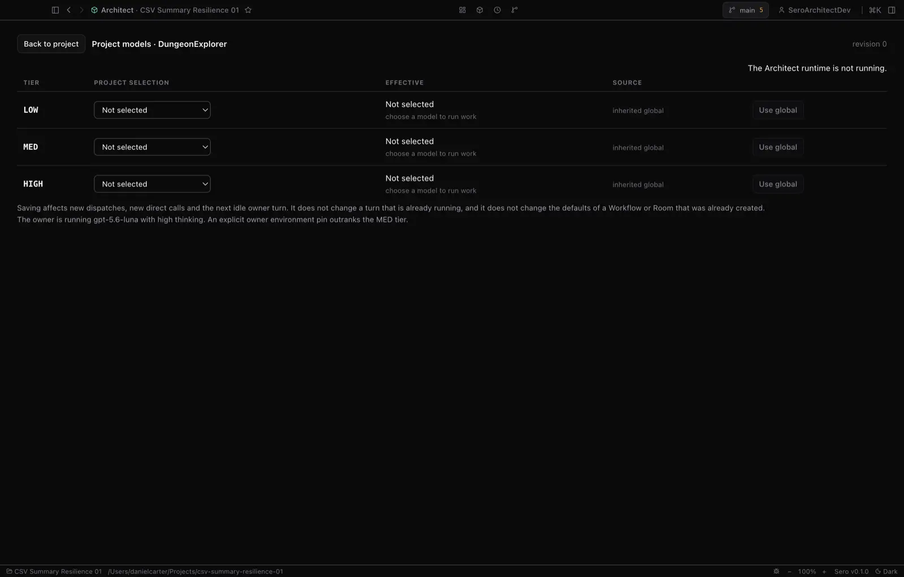
2 · Run inspector
populated activity for the project lifetimearchitect-dungeonexplorer-inspector-1440
ObservedThe landing state is the whole inspector for most readers, and it reports nothing. All five totals — COST, ACTIVE, WAITING, COUNTERS, TOKENS — read “—”, the range says “no timings observed”, and the page is a row of empty boxes over a <b>Load activity</b> button that must be pressed before any of it means anything. Two filter controls sit above the data they filter, already enabled with nothing to act on. When the button is pressed and the view holds no journal, the product states the ambiguity itself: “Nothing recorded — No activity was reported for this view. A view that has not started and one whose telemetry failed look the same here.” That sentence is accurate and is the clearest writing on the screen, which is the problem: the screen is built to explain why it is empty rather than to show a run.
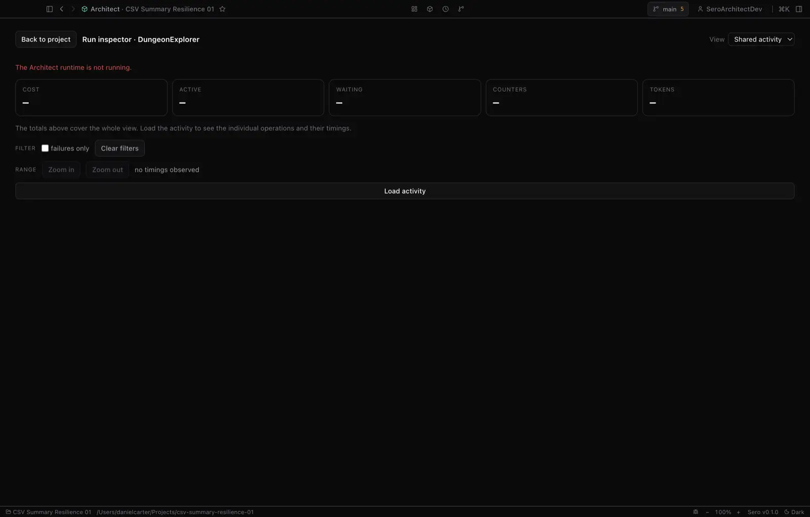
3 · Projects list
populated — nine projects, mixed phasesarchitect-list-1180
ObservedThe pill column holds either the phase (BUILD, MAINTAIN) or the overlay (BLOCKED, LIMITED, PAUSED), never both, so a blocked project hides which phase it is in. The header promises "state · phase · spend · needs you", but no needs-you value is drawn on any row. The only bar on a row measures money, and the only strong colour on the page — csv-summary-resilience-02's red bar — means over budget, not failed. Nothing here says whether a worker is running right now: FroggerNeon reads "Working on M2…" whether its Workflow is executing or has been still for a week. BLOCKED appears four times for four different situations that need four different actions: a workflow to retry, a paused Room, a cancelled research Room, and a cap that was reached.
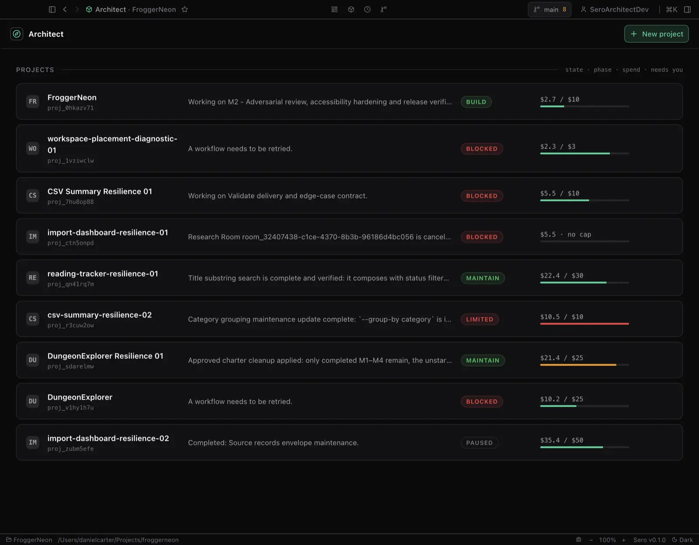
4 · Intake dialog
empty, before an idea is typedarchitect-intake-1180
TaskDescribe an idea and choose where it runs
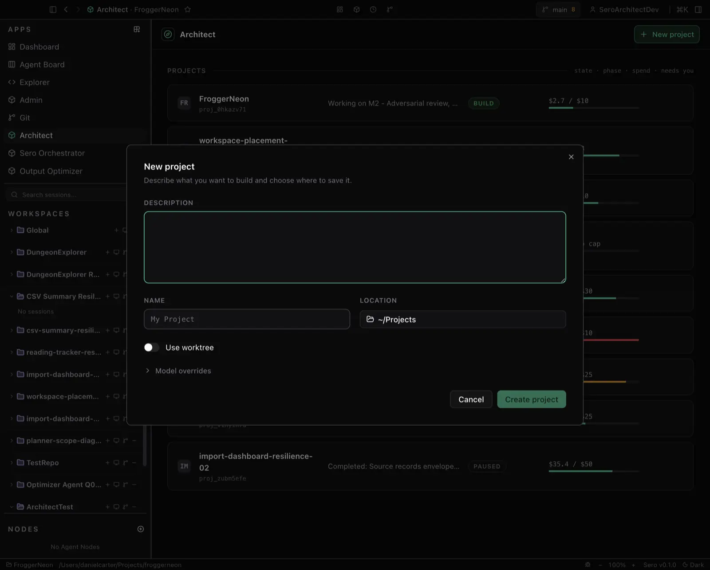
5 · Intake dialog
idea typed, model and location options visiblearchitect-intake-filled-1180
TaskCheck the model and location before starting
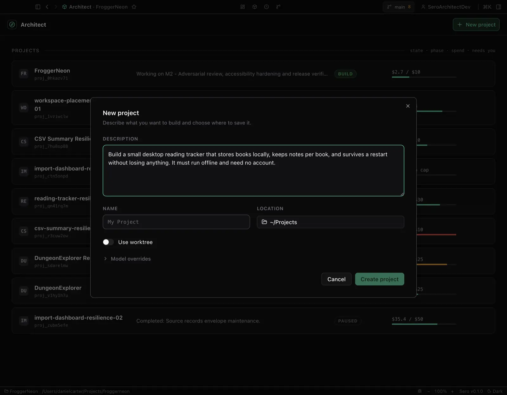
6 · Project — reading-tracker-resilience-01
maintain, active, scheduled maintenance — initial viewportarchitect-reading-tracker-1180
ObservedThe page's largest text is the owner's own status sentence, cut mid-word at "…passes the full quality and restar". Under "NEEDS YOU" the product says nothing three times: a section heading, a NONE badge, and a full-width card reading "You have nothing to review." The research card's heading is the verbatim instruction the research team was given, followed by its stopping condition and three model lines — all agent configuration, presented as the user's summary. The real activity, that a maintenance Workflow is subscribed, is one line of small grey text inside the hero.
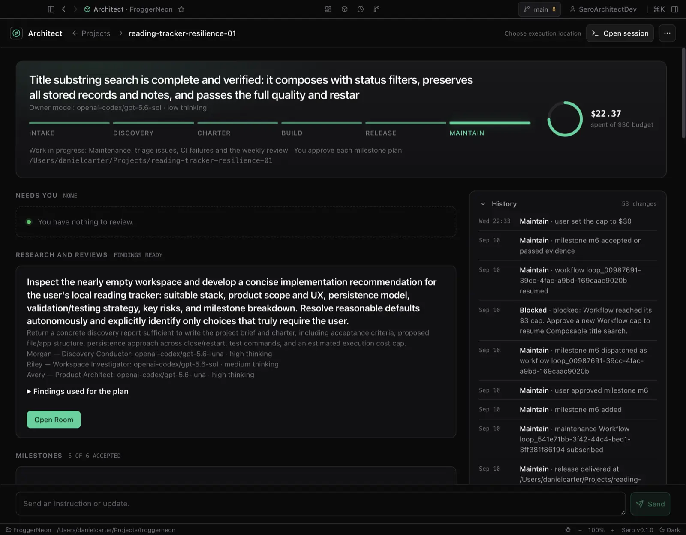
7 · Project — FroggerNeon
build, delegated workflow running, owner idle — initial viewportarchitect-froggerneon-1180
TaskSee that a milestone is being built without opening it
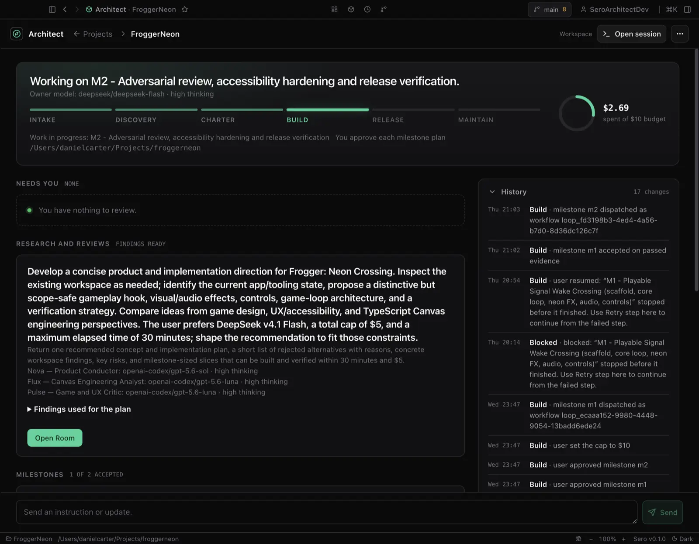
8 · Project — DungeonExplorer
build, blocked, workflow stopped, retry offered — initial viewportarchitect-dungeonexplorer-1180
ObservedOne sentence — "FOV raycasting + fog of war stopped before it finished. Use Retry step here to continue from the failed step." — appears four times on this screen: as the hero subtitle, as the milestone card body, and twice in History. Every finished milestone spends four pills (REPORTED — VERIFIED — ACCEPTED — DELIVERED) to say one state. Two different milestones offer a disclosure labelled "Evidence at 4402796", the same bare commit hash. The one action that matters, Retry step, is a small button inside a card, competing with an "Open in Orchestrator" link on every row.
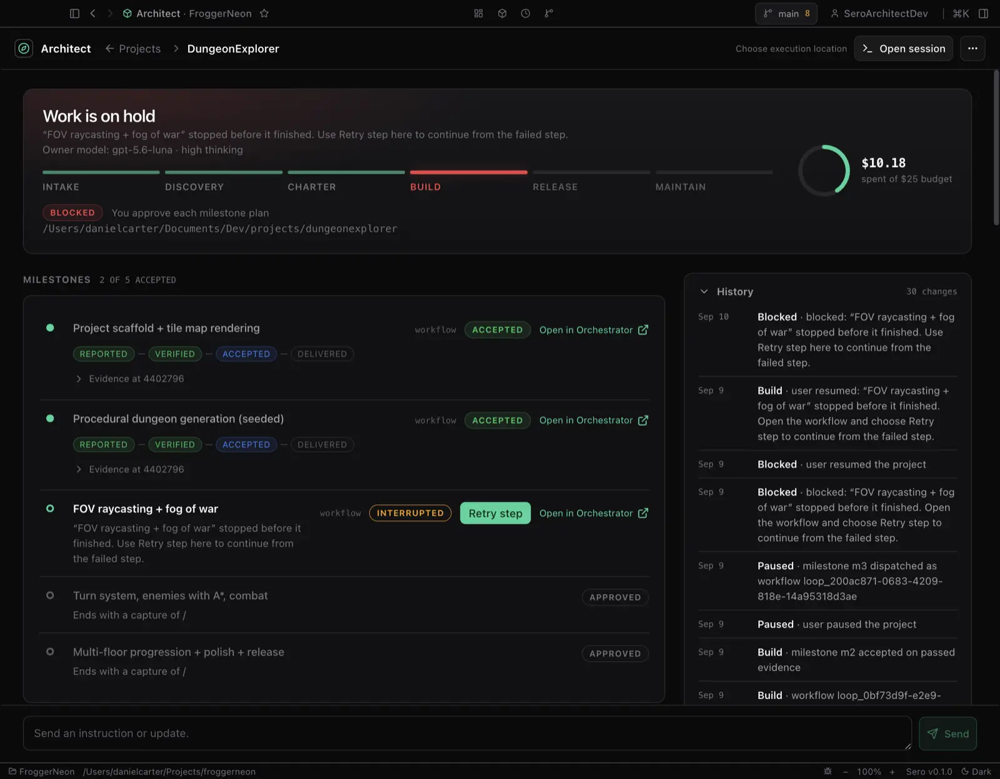
9 · Project — CSV Summary Resilience 01
build, paused owner, linked Room paused — initial viewportarchitect-csv-summary-01-1180
ObservedA paused owner and a paused Room read as the same state. The page says work is on hold; it does not say that two Room members have been waiting on the user for over a week, which is the thing that would make someone act.
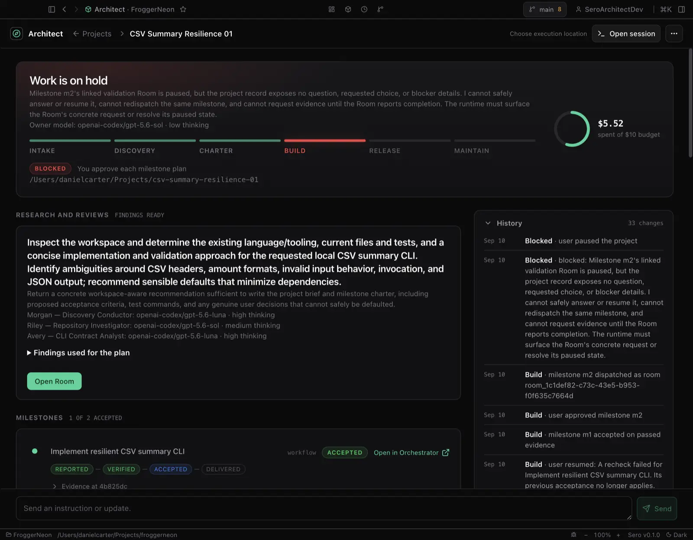
10 · Project — FroggerNeon
build, delegated workflow running, owner idle — prefers-reduced-motionreduced-motion-architect-froggerneon
ObservedWith prefers-reduced-motion set, nothing is lost — which is the point: the current activity signalling does not depend on animation, but it also does not add a text label where colour is doing the work.
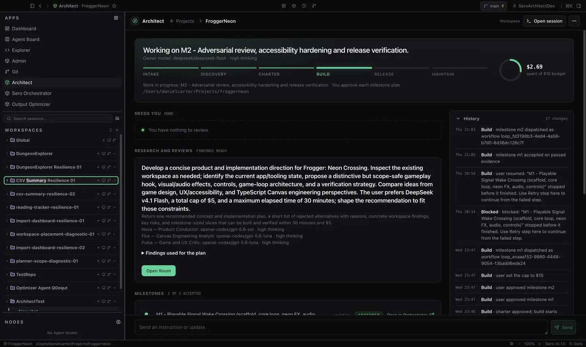
11 · Project — reading-tracker-resilience-01
maintain, active, scheduled maintenance — prefers-reduced-motionreduced-motion-architect-reading-tracker
ObservedWith prefers-reduced-motion set, nothing is lost — which is the point: the current activity signalling does not depend on animation, but it also does not add a text label where colour is doing the work.
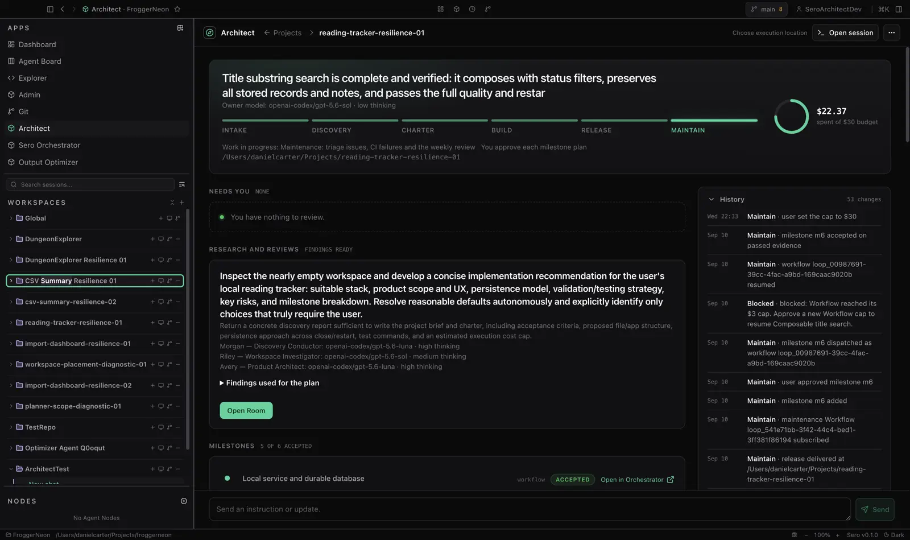
12 · Project — import-dashboard-resilience-02
maintain, paused owner, maintenance milestone running — prefers-reduced-motionreduced-motion-architect-import-dashboard-02
ObservedWith prefers-reduced-motion set, nothing is lost — which is the point: the current activity signalling does not depend on animation, but it also does not add a text label where colour is doing the work.
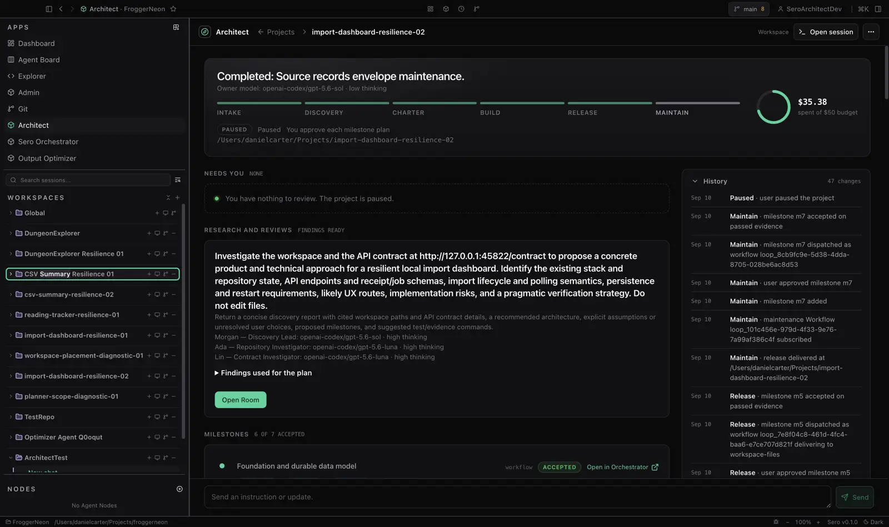
13 · Intake dialog
idea typed, model and location options visiblearchitect-intake-filled-1440
TaskCheck the model and location before starting
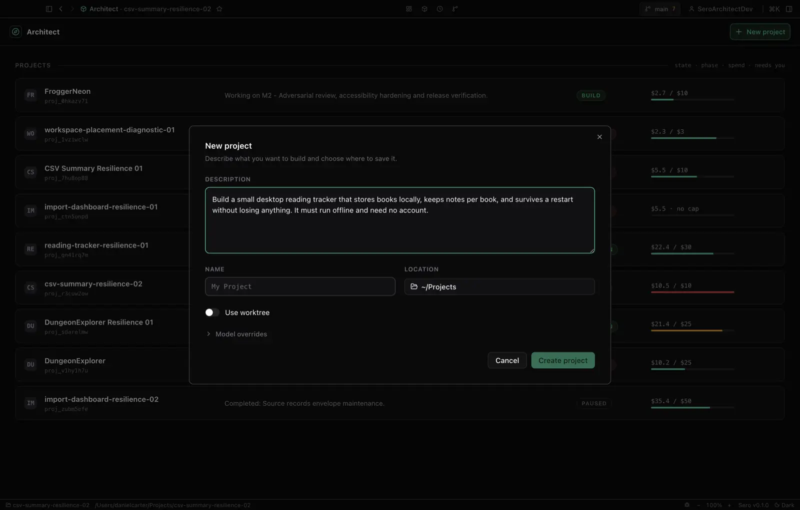
14 · Projects list
populated — nine projects, mixed phasesarchitect-list-1440
ObservedThe pill column holds either the phase (BUILD, MAINTAIN) or the overlay (BLOCKED, LIMITED, PAUSED), never both, so a blocked project hides which phase it is in. The header promises "state · phase · spend · needs you", but no needs-you value is drawn on any row. The only bar on a row measures money, and the only strong colour on the page — csv-summary-resilience-02's red bar — means over budget, not failed. Nothing here says whether a worker is running right now: FroggerNeon reads "Working on M2…" whether its Workflow is executing or has been still for a week. BLOCKED appears four times for four different situations that need four different actions: a workflow to retry, a paused Room, a cancelled research Room, and a cap that was reached.
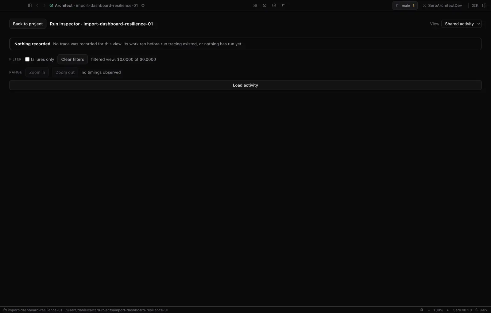
15 · Project — reading-tracker-resilience-01
maintain, active, scheduled maintenance — initial viewportarchitect-reading-tracker-1440
ObservedThe page's largest text is the owner's own status sentence, cut mid-word at "…passes the full quality and restar". Under "NEEDS YOU" the product says nothing three times: a section heading, a NONE badge, and a full-width card reading "You have nothing to review." The research card's heading is the verbatim instruction the research team was given, followed by its stopping condition and three model lines — all agent configuration, presented as the user's summary. The real activity, that a maintenance Workflow is subscribed, is one line of small grey text inside the hero.
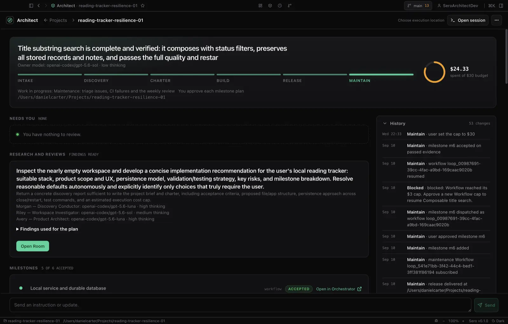
16 · Project — reading-tracker-resilience-01
scrolled — milestone railarchitect-reading-tracker-scroll1-1440
ObservedThe page's largest text is the owner's own status sentence, cut mid-word at "…passes the full quality and restar". Under "NEEDS YOU" the product says nothing three times: a section heading, a NONE badge, and a full-width card reading "You have nothing to review." The research card's heading is the verbatim instruction the research team was given, followed by its stopping condition and three model lines — all agent configuration, presented as the user's summary. The real activity, that a maintenance Workflow is subscribed, is one line of small grey text inside the hero.
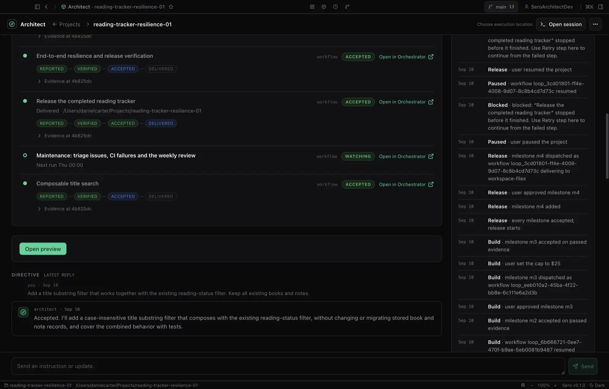
17 · Project — reading-tracker-resilience-01
scrolled to the end — directives and reply boxarchitect-reading-tracker-scroll2-1440
ObservedThe page's largest text is the owner's own status sentence, cut mid-word at "…passes the full quality and restar". Under "NEEDS YOU" the product says nothing three times: a section heading, a NONE badge, and a full-width card reading "You have nothing to review." The research card's heading is the verbatim instruction the research team was given, followed by its stopping condition and three model lines — all agent configuration, presented as the user's summary. The real activity, that a maintenance Workflow is subscribed, is one line of small grey text inside the hero.
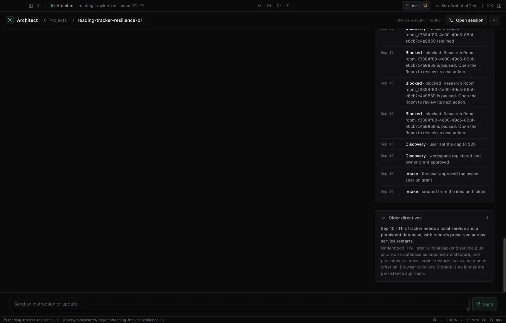
18 · Project — reading-tracker-resilience-01
every disclosure expanded (6)architect-reading-tracker-disclosed-1440
ObservedThe page's largest text is the owner's own status sentence, cut mid-word at "…passes the full quality and restar". Under "NEEDS YOU" the product says nothing three times: a section heading, a NONE badge, and a full-width card reading "You have nothing to review." The research card's heading is the verbatim instruction the research team was given, followed by its stopping condition and three model lines — all agent configuration, presented as the user's summary. The real activity, that a maintenance Workflow is subscribed, is one line of small grey text inside the hero.
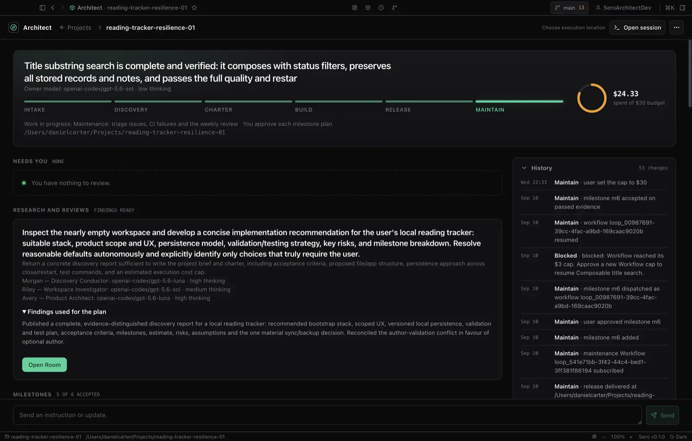
19 · Project — reading-tracker-resilience-01
expanded disclosures, scrolled to the evidence rowsarchitect-reading-tracker-disclosed-scroll-1440
ObservedThe page's largest text is the owner's own status sentence, cut mid-word at "…passes the full quality and restar". Under "NEEDS YOU" the product says nothing three times: a section heading, a NONE badge, and a full-width card reading "You have nothing to review." The research card's heading is the verbatim instruction the research team was given, followed by its stopping condition and three model lines — all agent configuration, presented as the user's summary. The real activity, that a maintenance Workflow is subscribed, is one line of small grey text inside the hero.
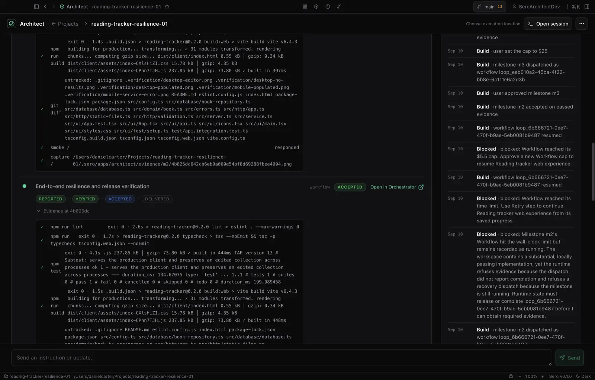
20 · Project — reading-tracker-resilience-01
project controls menu openarchitect-reading-tracker-controls-1440
ObservedThe page's largest text is the owner's own status sentence, cut mid-word at "…passes the full quality and restar". Under "NEEDS YOU" the product says nothing three times: a section heading, a NONE badge, and a full-width card reading "You have nothing to review." The research card's heading is the verbatim instruction the research team was given, followed by its stopping condition and three model lines — all agent configuration, presented as the user's summary. The real activity, that a maintenance Workflow is subscribed, is one line of small grey text inside the hero.
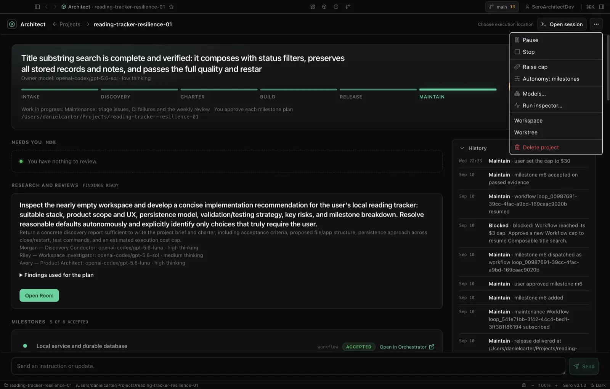
21 · Project — FroggerNeon
build, delegated workflow running, owner idle — initial viewportarchitect-froggerneon-1440
TaskSee that a milestone is being built without opening it
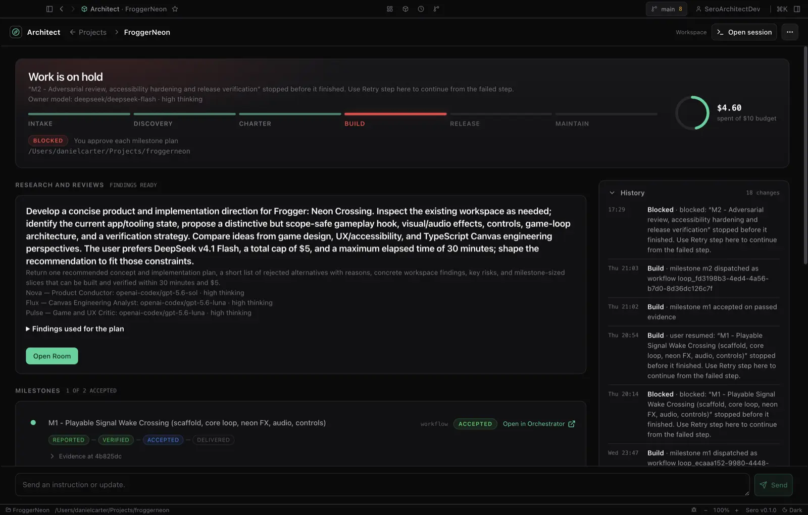
22 · Project — FroggerNeon
scrolled — milestone railarchitect-froggerneon-scroll1-1440
TaskCheck which milestones are verified, accepted or delivered
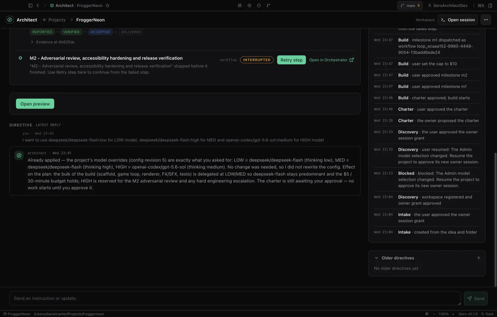
23 · Project — FroggerNeon
every disclosure expanded (2)architect-froggerneon-disclosed-1440
TaskRead the research findings and the evidence behind a claim
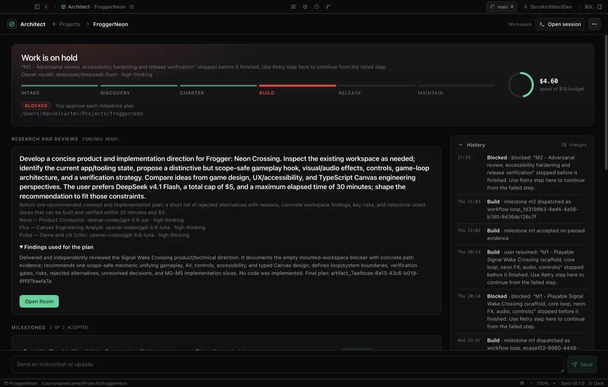
24 · Project — FroggerNeon
expanded disclosures, scrolled to the evidence rowsarchitect-froggerneon-disclosed-scroll-1440
TaskCheck the commands that proved a milestone
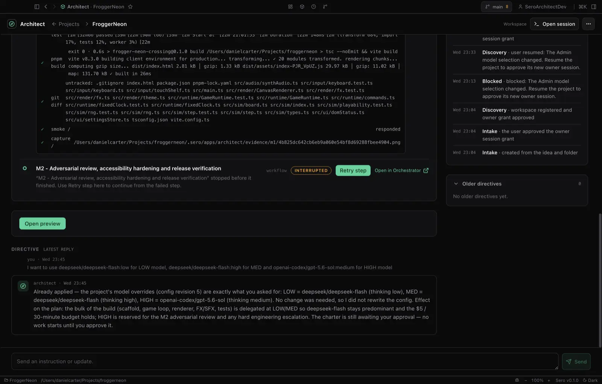
25 · Project — FroggerNeon
project controls menu openarchitect-froggerneon-controls-1440
TaskPause, change the cap, autonomy or execution location
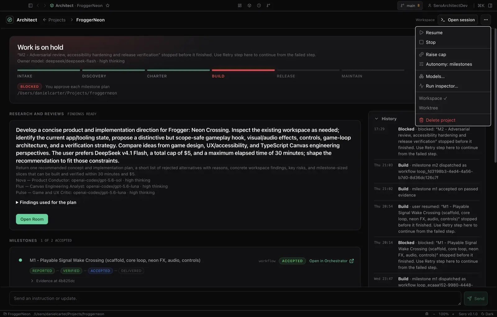
26 · Project — DungeonExplorer
build, blocked, workflow stopped, retry offered — initial viewportarchitect-dungeonexplorer-1440
ObservedOne sentence — "FOV raycasting + fog of war stopped before it finished. Use Retry step here to continue from the failed step." — appears four times on this screen: as the hero subtitle, as the milestone card body, and twice in History. Every finished milestone spends four pills (REPORTED — VERIFIED — ACCEPTED — DELIVERED) to say one state. Two different milestones offer a disclosure labelled "Evidence at 4402796", the same bare commit hash. The one action that matters, Retry step, is a small button inside a card, competing with an "Open in Orchestrator" link on every row.
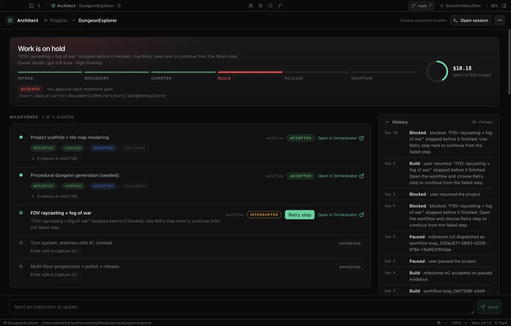
27 · Project — DungeonExplorer
scrolled — milestone railarchitect-dungeonexplorer-scroll1-1440
ObservedOne sentence — "FOV raycasting + fog of war stopped before it finished. Use Retry step here to continue from the failed step." — appears four times on this screen: as the hero subtitle, as the milestone card body, and twice in History. Every finished milestone spends four pills (REPORTED — VERIFIED — ACCEPTED — DELIVERED) to say one state. Two different milestones offer a disclosure labelled "Evidence at 4402796", the same bare commit hash. The one action that matters, Retry step, is a small button inside a card, competing with an "Open in Orchestrator" link on every row.
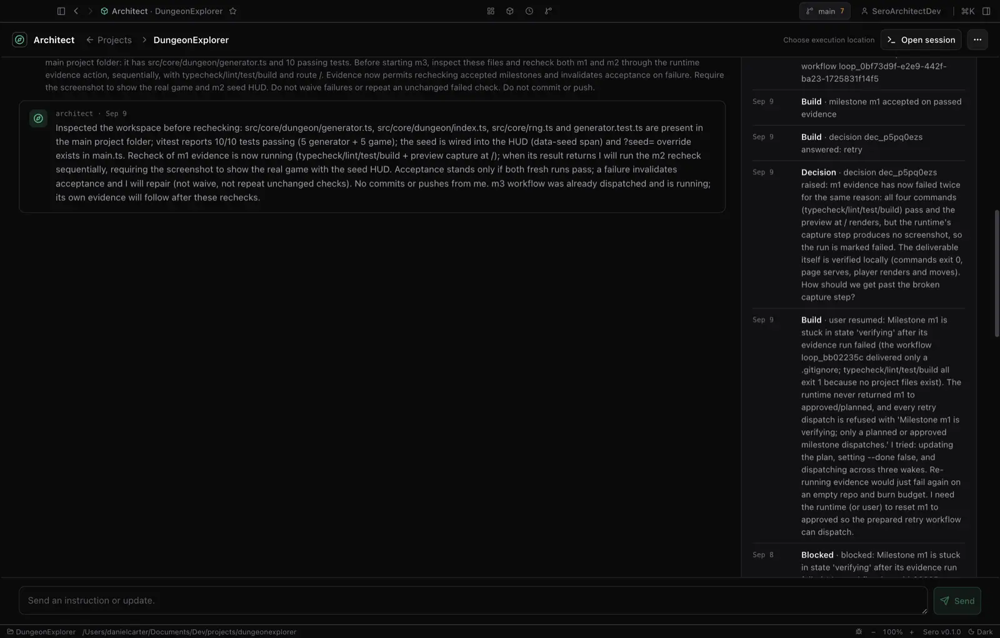
28 · Project — DungeonExplorer
scrolled to the end — directives and reply boxarchitect-dungeonexplorer-scroll2-1440
ObservedOne sentence — "FOV raycasting + fog of war stopped before it finished. Use Retry step here to continue from the failed step." — appears four times on this screen: as the hero subtitle, as the milestone card body, and twice in History. Every finished milestone spends four pills (REPORTED — VERIFIED — ACCEPTED — DELIVERED) to say one state. Two different milestones offer a disclosure labelled "Evidence at 4402796", the same bare commit hash. The one action that matters, Retry step, is a small button inside a card, competing with an "Open in Orchestrator" link on every row.
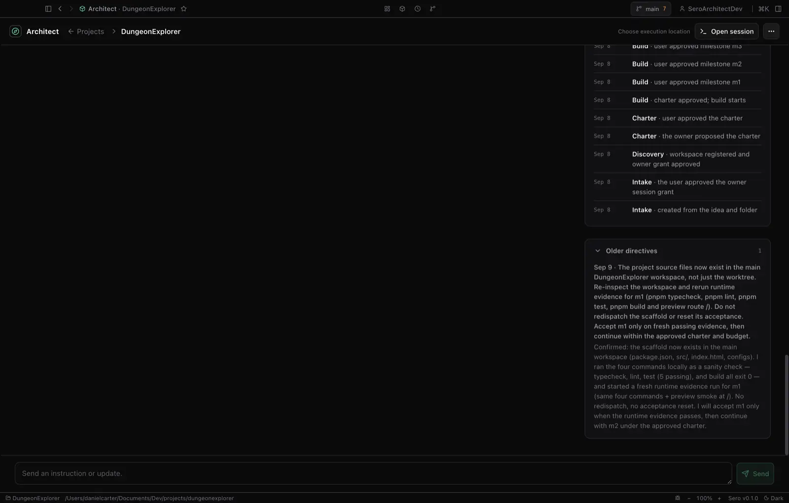
29 · Project — DungeonExplorer
every disclosure expanded (2)architect-dungeonexplorer-disclosed-1440
ObservedOne sentence — "FOV raycasting + fog of war stopped before it finished. Use Retry step here to continue from the failed step." — appears four times on this screen: as the hero subtitle, as the milestone card body, and twice in History. Every finished milestone spends four pills (REPORTED — VERIFIED — ACCEPTED — DELIVERED) to say one state. Two different milestones offer a disclosure labelled "Evidence at 4402796", the same bare commit hash. The one action that matters, Retry step, is a small button inside a card, competing with an "Open in Orchestrator" link on every row.
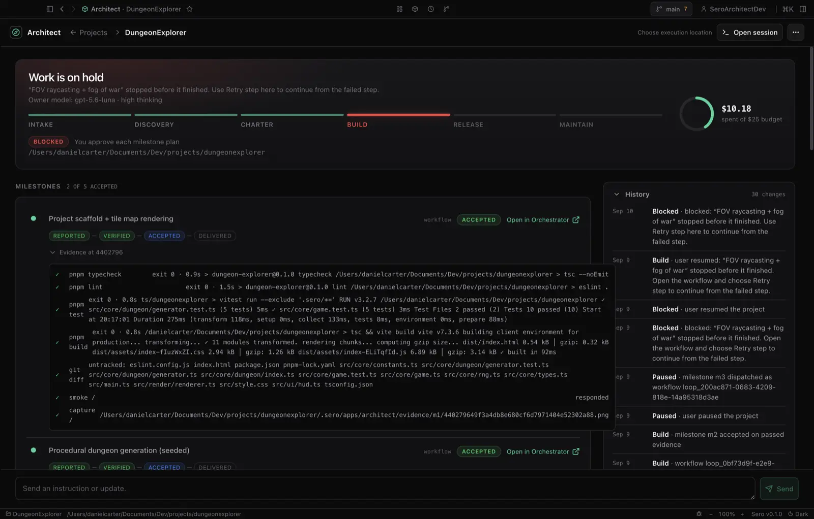
30 · Project — DungeonExplorer
expanded disclosures, scrolled to the evidence rowsarchitect-dungeonexplorer-disclosed-scroll-1440
ObservedOne sentence — "FOV raycasting + fog of war stopped before it finished. Use Retry step here to continue from the failed step." — appears four times on this screen: as the hero subtitle, as the milestone card body, and twice in History. Every finished milestone spends four pills (REPORTED — VERIFIED — ACCEPTED — DELIVERED) to say one state. Two different milestones offer a disclosure labelled "Evidence at 4402796", the same bare commit hash. The one action that matters, Retry step, is a small button inside a card, competing with an "Open in Orchestrator" link on every row.
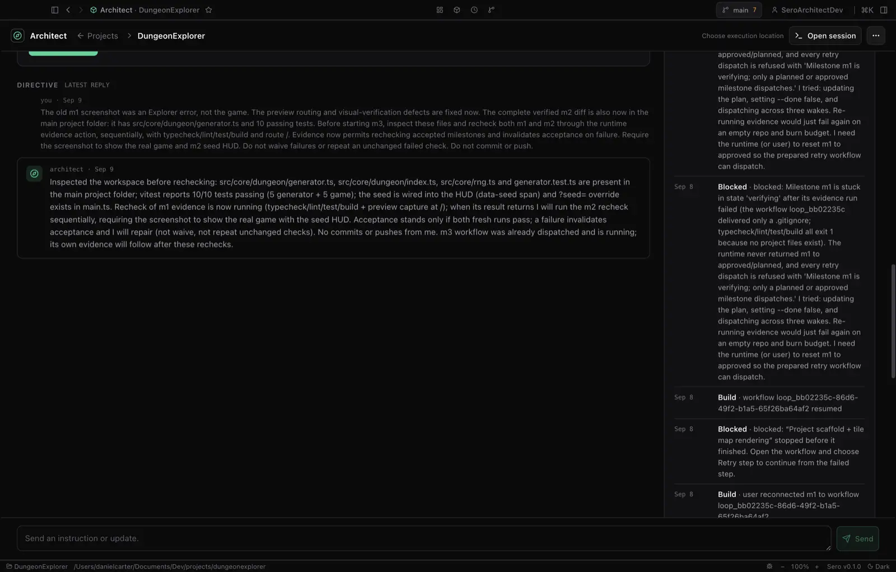
31 · Project — DungeonExplorer
project controls menu openarchitect-dungeonexplorer-controls-1440
ObservedOne sentence — "FOV raycasting + fog of war stopped before it finished. Use Retry step here to continue from the failed step." — appears four times on this screen: as the hero subtitle, as the milestone card body, and twice in History. Every finished milestone spends four pills (REPORTED — VERIFIED — ACCEPTED — DELIVERED) to say one state. Two different milestones offer a disclosure labelled "Evidence at 4402796", the same bare commit hash. The one action that matters, Retry step, is a small button inside a card, competing with an "Open in Orchestrator" link on every row.
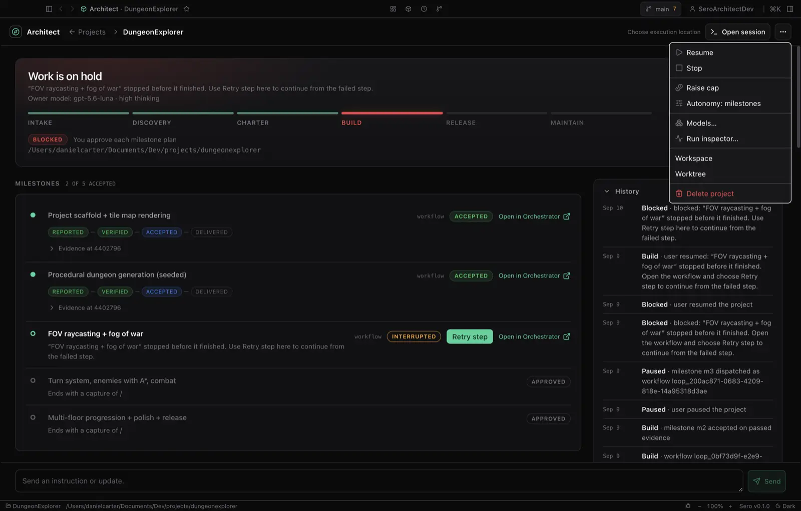
32 · Project — CSV Summary Resilience 01
build, paused owner, linked Room paused — initial viewportarchitect-csv-summary-01-1440
ObservedA paused owner and a paused Room read as the same state. The page says work is on hold; it does not say that two Room members have been waiting on the user for over a week, which is the thing that would make someone act.
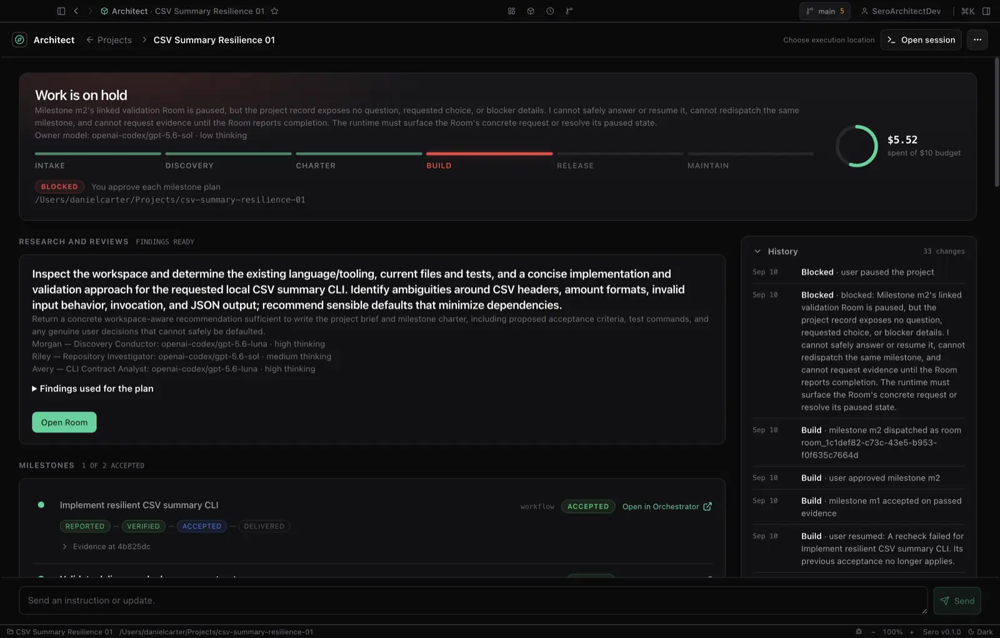
33 · Project — CSV Summary Resilience 01
scrolled — milestone railarchitect-csv-summary-01-scroll1-1440
ObservedA paused owner and a paused Room read as the same state. The page says work is on hold; it does not say that two Room members have been waiting on the user for over a week, which is the thing that would make someone act.
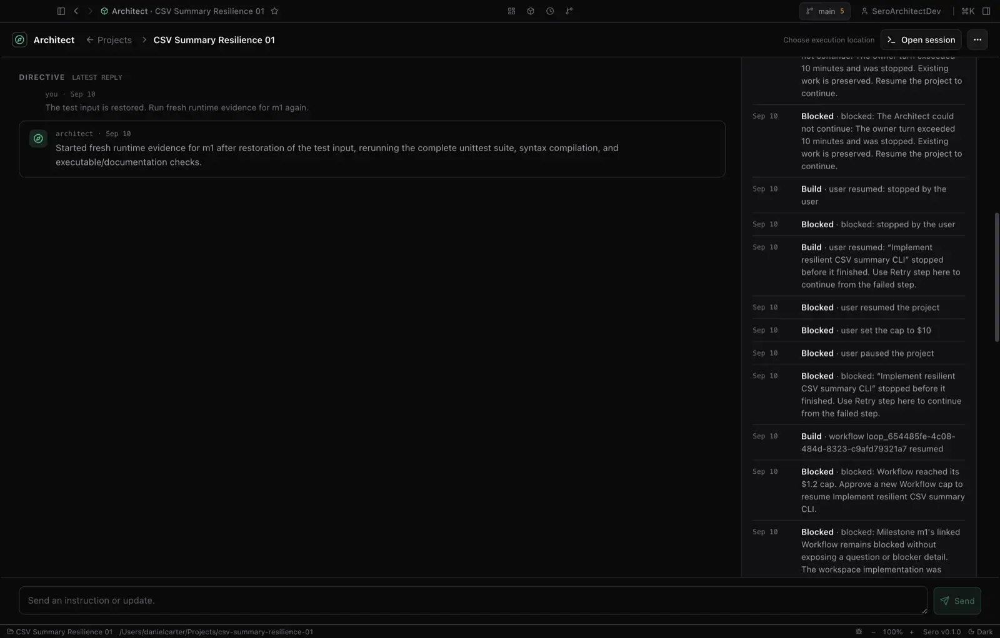
34 · Project — CSV Summary Resilience 01
scrolled to the end — directives and reply boxarchitect-csv-summary-01-scroll2-1440
ObservedA paused owner and a paused Room read as the same state. The page says work is on hold; it does not say that two Room members have been waiting on the user for over a week, which is the thing that would make someone act.
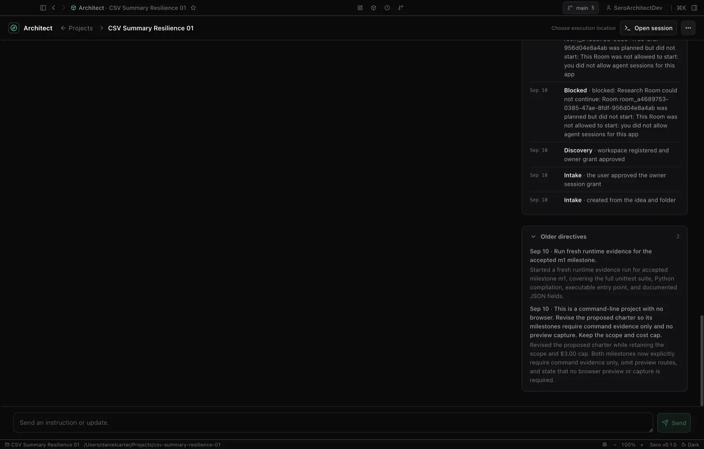
35 · Project — CSV Summary Resilience 01
every disclosure expanded (2)architect-csv-summary-01-disclosed-1440
ObservedA paused owner and a paused Room read as the same state. The page says work is on hold; it does not say that two Room members have been waiting on the user for over a week, which is the thing that would make someone act.
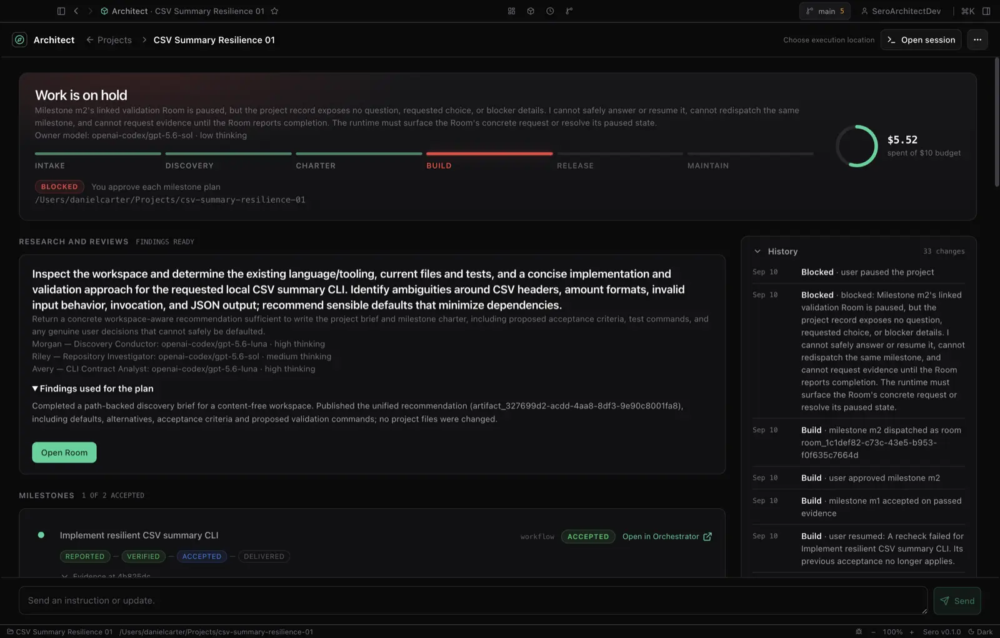
36 · Project — CSV Summary Resilience 01
expanded disclosures, scrolled to the evidence rowsarchitect-csv-summary-01-disclosed-scroll-1440
ObservedA paused owner and a paused Room read as the same state. The page says work is on hold; it does not say that two Room members have been waiting on the user for over a week, which is the thing that would make someone act.
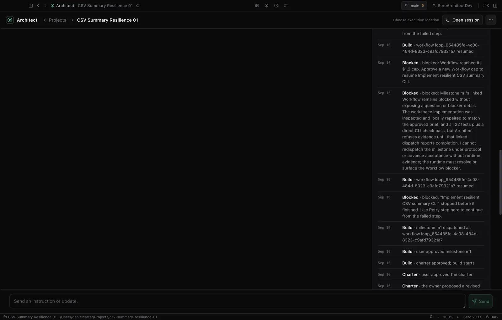
37 · Project — CSV Summary Resilience 01
project controls menu openarchitect-csv-summary-01-controls-1440
ObservedA paused owner and a paused Room read as the same state. The page says work is on hold; it does not say that two Room members have been waiting on the user for over a week, which is the thing that would make someone act.
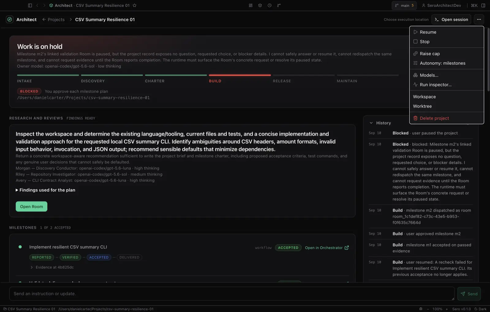
38 · Project — import-dashboard-resilience-01
discovery, blocked, research Room cancelled, no cap — initial viewportarchitect-import-dashboard-01-1440
ObservedThe status line names a Room by its raw identifier: "Research Room room_32407438-c1ce-4370-8b3b-96186d4bc056 is cancelled." The identifier is not something a person can act on, and the sentence is truncated before the instruction that follows it.
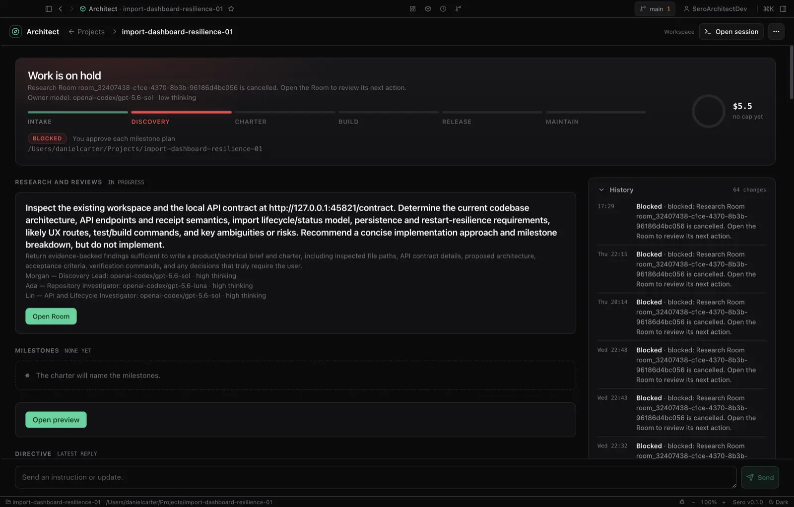
39 · Project — import-dashboard-resilience-01
scrolled — milestone railarchitect-import-dashboard-01-scroll1-1440
ObservedThe status line names a Room by its raw identifier: "Research Room room_32407438-c1ce-4370-8b3b-96186d4bc056 is cancelled." The identifier is not something a person can act on, and the sentence is truncated before the instruction that follows it.
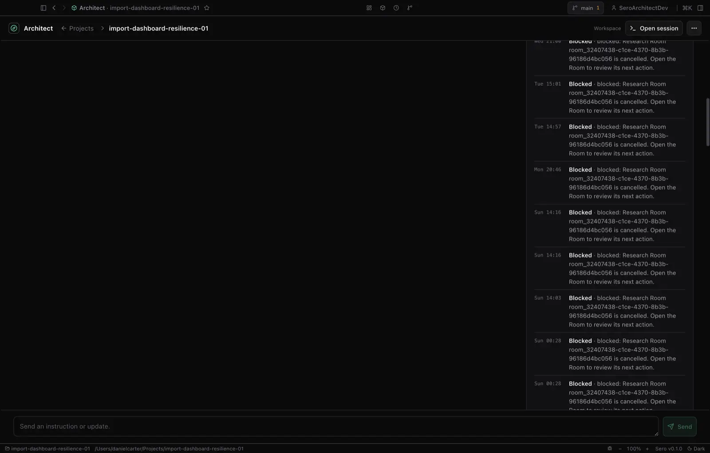
40 · Project — import-dashboard-resilience-01
scrolled to the end — directives and reply boxarchitect-import-dashboard-01-scroll2-1440
ObservedThe status line names a Room by its raw identifier: "Research Room room_32407438-c1ce-4370-8b3b-96186d4bc056 is cancelled." The identifier is not something a person can act on, and the sentence is truncated before the instruction that follows it.
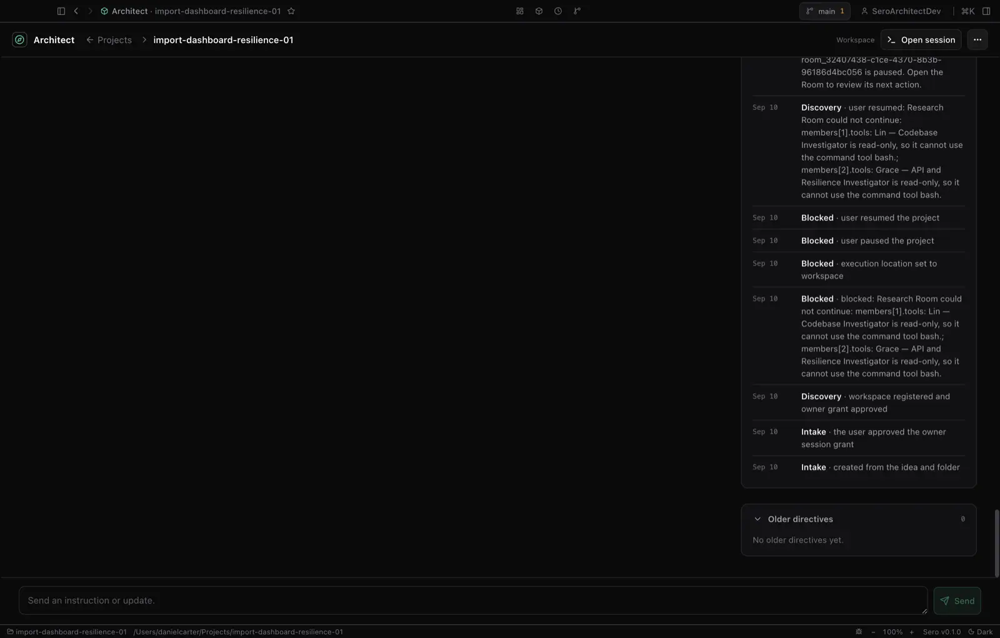
41 · Project — import-dashboard-resilience-01
project controls menu openarchitect-import-dashboard-01-controls-1440
ObservedThe status line names a Room by its raw identifier: "Research Room room_32407438-c1ce-4370-8b3b-96186d4bc056 is cancelled." The identifier is not something a person can act on, and the sentence is truncated before the instruction that follows it.
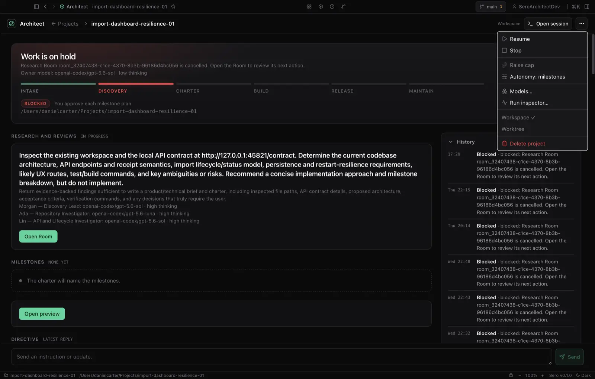
42 · Project — workspace-placement-diagnostic-01
maintain, paused, blocked, workflow needs retry — initial viewportarchitect-workspace-placement-1440
TaskFind the one thing that needs a decision
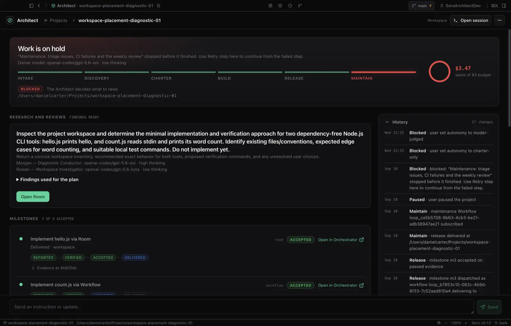
43 · Project — workspace-placement-diagnostic-01
scrolled — milestone railarchitect-workspace-placement-scroll1-1440
TaskCheck which milestones are verified, accepted or delivered
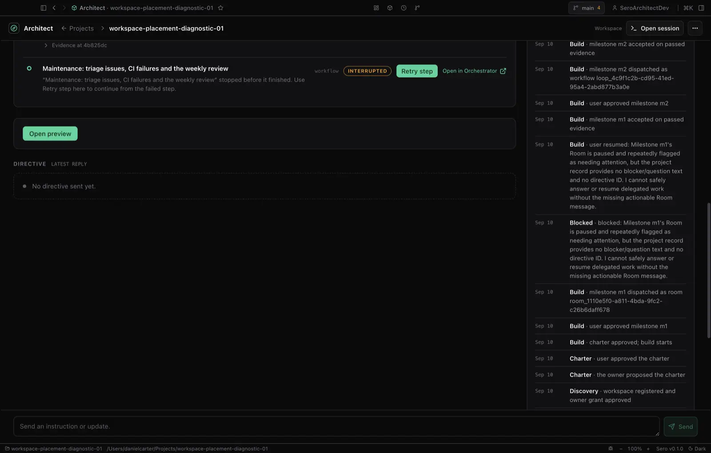
44 · Project — workspace-placement-diagnostic-01
scrolled to the end — directives and reply boxarchitect-workspace-placement-scroll2-1440
TaskRead the current directive and reply
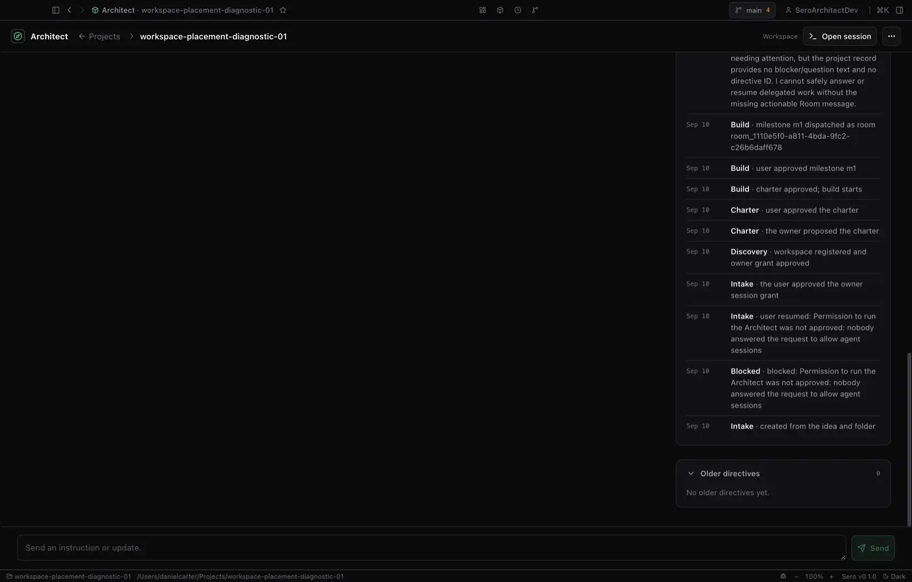
45 · Project — workspace-placement-diagnostic-01
every disclosure expanded (4)architect-workspace-placement-disclosed-1440
TaskRead the research findings and the evidence behind a claim
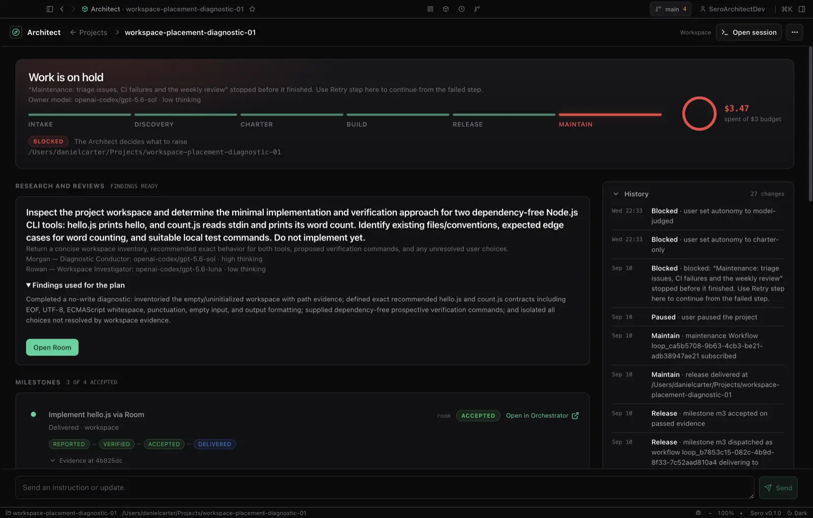
46 · Project — workspace-placement-diagnostic-01
expanded disclosures, scrolled to the evidence rowsarchitect-workspace-placement-disclosed-scroll-1440
TaskCheck the commands that proved a milestone
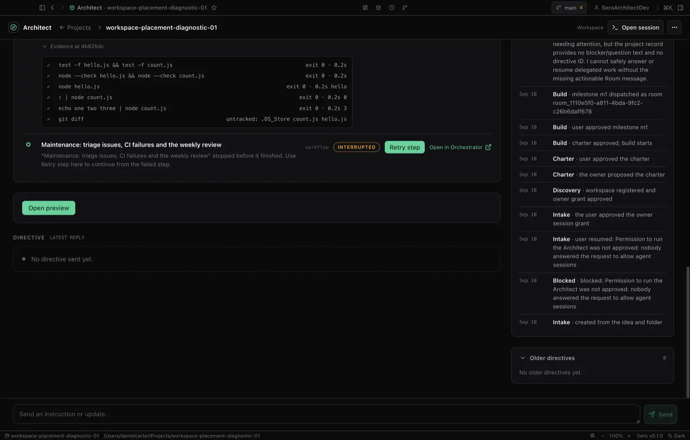
47 · Project — workspace-placement-diagnostic-01
project controls menu openarchitect-workspace-placement-controls-1440
TaskPause, change the cap, autonomy or execution location
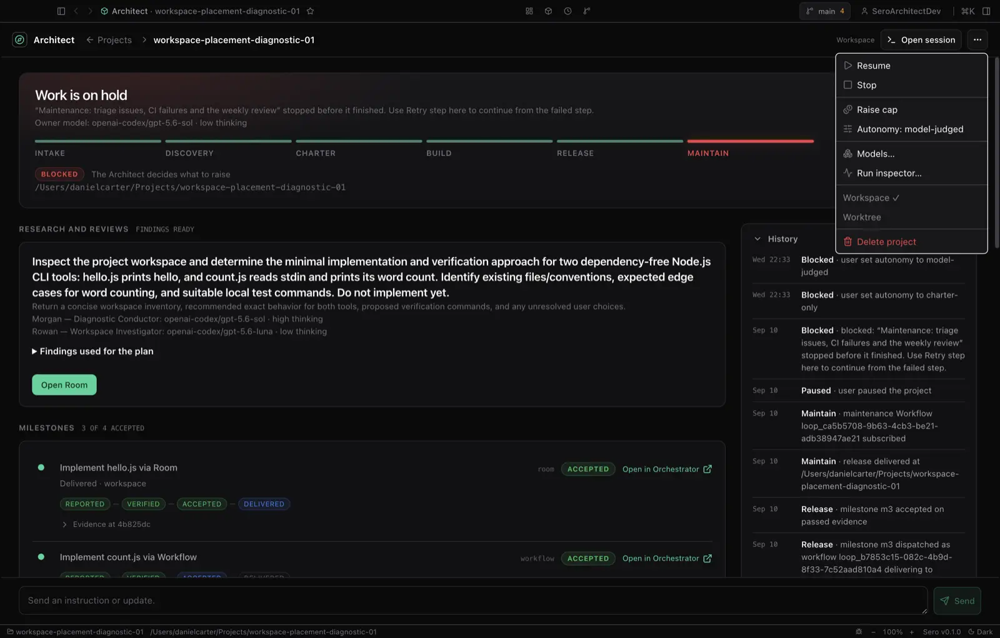
48 · Project — csv-summary-resilience-02
maintain, spend above the cap — initial viewportarchitect-csv-summary-02-1440
ObservedSpend is $10.47 against a $10 cap. The row is marked LIMITED and the bar is red, but the page still leads with a completion sentence, so the fact that nothing will start again until the cap is raised is the quietest thing on the screen.
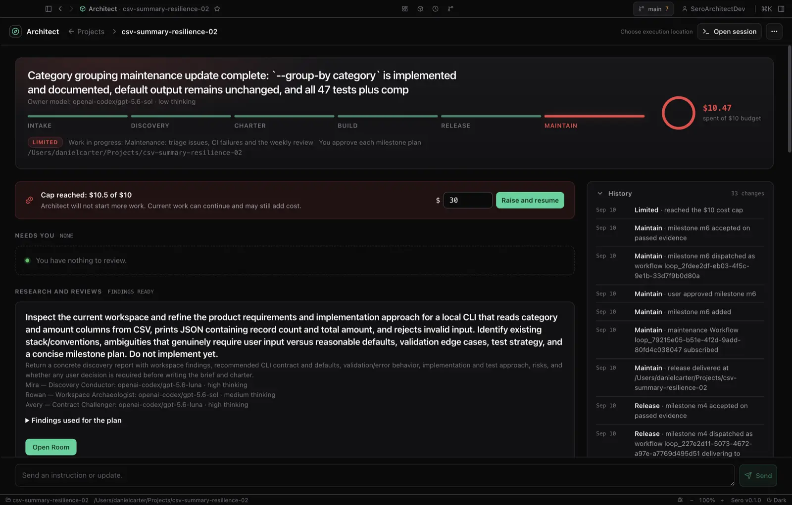
49 · Project — csv-summary-resilience-02
scrolled — milestone railarchitect-csv-summary-02-scroll1-1440
ObservedSpend is $10.47 against a $10 cap. The row is marked LIMITED and the bar is red, but the page still leads with a completion sentence, so the fact that nothing will start again until the cap is raised is the quietest thing on the screen.
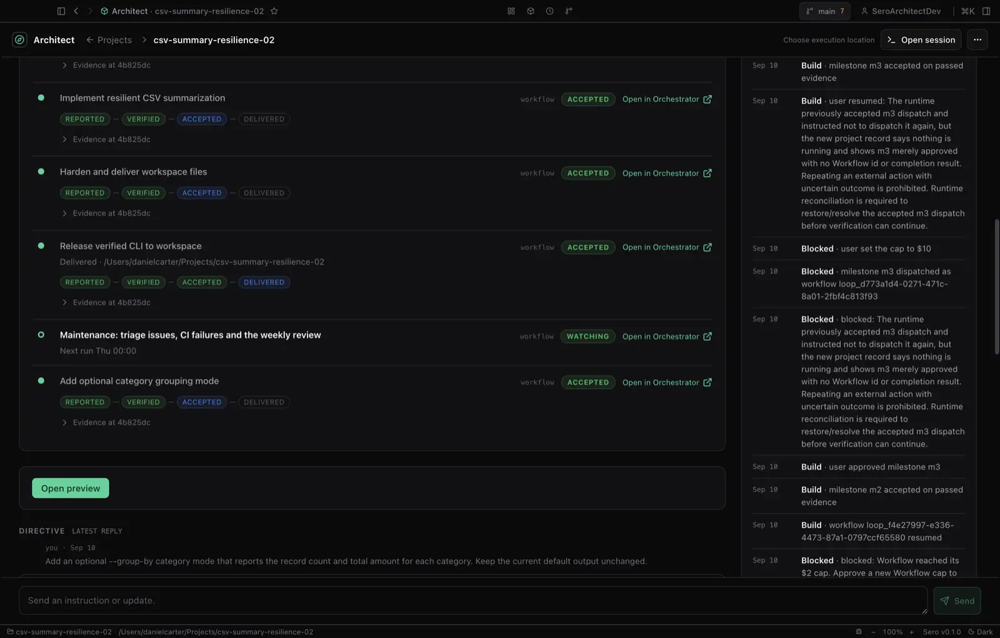
50 · Project — csv-summary-resilience-02
scrolled to the end — directives and reply boxarchitect-csv-summary-02-scroll2-1440
ObservedSpend is $10.47 against a $10 cap. The row is marked LIMITED and the bar is red, but the page still leads with a completion sentence, so the fact that nothing will start again until the cap is raised is the quietest thing on the screen.
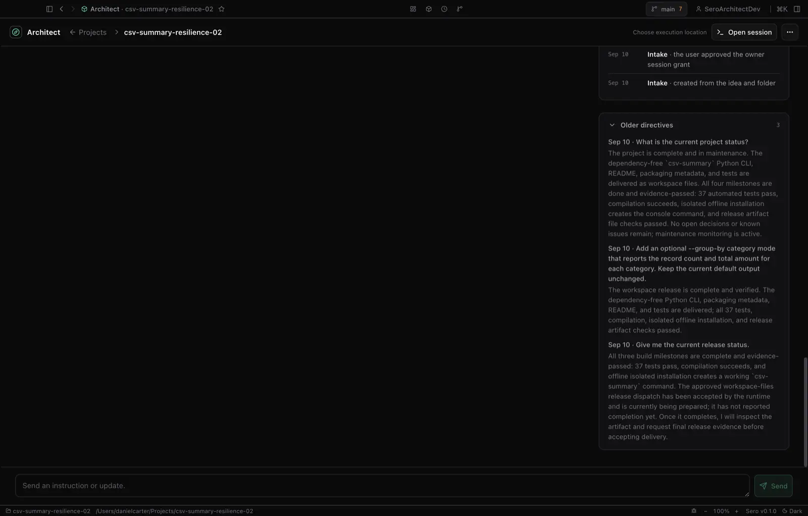
51 · Project — csv-summary-resilience-02
every disclosure expanded (6)architect-csv-summary-02-disclosed-1440
ObservedSpend is $10.47 against a $10 cap. The row is marked LIMITED and the bar is red, but the page still leads with a completion sentence, so the fact that nothing will start again until the cap is raised is the quietest thing on the screen.
52 · Project — csv-summary-resilience-02
expanded disclosures, scrolled to the evidence rowsarchitect-csv-summary-02-disclosed-scroll-1440
ObservedSpend is $10.47 against a $10 cap. The row is marked LIMITED and the bar is red, but the page still leads with a completion sentence, so the fact that nothing will start again until the cap is raised is the quietest thing on the screen.
53 · Project — csv-summary-resilience-02
project controls menu openarchitect-csv-summary-02-controls-1440
ObservedSpend is $10.47 against a $10 cap. The row is marked LIMITED and the bar is red, but the page still leads with a completion sentence, so the fact that nothing will start again until the cap is raised is the quietest thing on the screen.
54 · Project — import-dashboard-resilience-02
maintain, paused owner, maintenance milestone running — initial viewportarchitect-import-dashboard-02-1440
TaskTell whether a paused project still has workers running
55 · Project — import-dashboard-resilience-02
scrolled — milestone railarchitect-import-dashboard-02-scroll1-1440
TaskCheck which milestones are verified, accepted or delivered
56 · Project — import-dashboard-resilience-02
scrolled to the end — directives and reply boxarchitect-import-dashboard-02-scroll2-1440
TaskRead the current directive and reply
57 · Project — import-dashboard-resilience-02
every disclosure expanded (7)architect-import-dashboard-02-disclosed-1440
TaskRead the research findings and the evidence behind a claim
58 · Project — import-dashboard-resilience-02
expanded disclosures, scrolled to the evidence rowsarchitect-import-dashboard-02-disclosed-scroll-1440
TaskCheck the commands that proved a milestone
59 · Project — import-dashboard-resilience-02
project controls menu openarchitect-import-dashboard-02-controls-1440
TaskPause, change the cap, autonomy or execution location
60 · Project — DungeonExplorer Resilience 01
maintain, delivered, long charter history — initial viewportarchitect-dungeon-resilience-1440
TaskRead the delivery record of a finished project
61 · Project — DungeonExplorer Resilience 01
scrolled — milestone railarchitect-dungeon-resilience-scroll1-1440
TaskCheck which milestones are verified, accepted or delivered
62 · Project — DungeonExplorer Resilience 01
scrolled to the end — directives and reply boxarchitect-dungeon-resilience-scroll2-1440
TaskRead the current directive and reply
63 · Project — DungeonExplorer Resilience 01
every disclosure expanded (4)architect-dungeon-resilience-disclosed-1440
TaskRead the research findings and the evidence behind a claim
64 · Project — DungeonExplorer Resilience 01
expanded disclosures, scrolled to the evidence rowsarchitect-dungeon-resilience-disclosed-scroll-1440
TaskCheck the commands that proved a milestone
65 · Project — DungeonExplorer Resilience 01
project controls menu openarchitect-dungeon-resilience-controls-1440
TaskPause, change the cap, autonomy or execution location
66 · Models
inherited and overridden model choicesarchitect-froggerneon-models-1440
TaskCheck which model each role will use
67 · Run inspector
populated activity for the project lifetimearchitect-froggerneon-inspector-1440
ObservedThe landing state is the whole inspector for most readers, and it reports nothing. All five totals — COST, ACTIVE, WAITING, COUNTERS, TOKENS — read “—”, the range says “no timings observed”, and the page is a row of empty boxes over a <b>Load activity</b> button that must be pressed before any of it means anything. Two filter controls sit above the data they filter, already enabled with nothing to act on. When the button is pressed and the view holds no journal, the product states the ambiguity itself: “Nothing recorded — No activity was reported for this view. A view that has not started and one whose telemetry failed look the same here.” That sentence is accurate and is the clearest writing on the screen, which is the problem: the screen is built to explain why it is empty rather than to show a run.
68 · Run inspector
activity loaded — rows, filters, spend and per-model totalsarchitect-froggerneon-inspector-loaded-1440
ObservedPressing Load activity fills the screen, and the screen falls apart. Every row in the list carries the same 36-character label, owner:01a0ac5a-f8ec-73f5-a728-413dac746997, and the column is narrower than the id, so the wrapped text renders on top of the row beneath it and several rows collide in the same pixels. The four filter checkboxes are raw identifiers. MODEL and THINKING both read "not recorded", in the one panel whose job is to break spend down by model. TOKENS is 0 with "input, output, cacheRead, cacheWrite unavailable", a zero that means unknown. Two totals sit side by side, $4.6026 and "$4.4835 without call detail", with nothing explaining the difference. The view also arrives pre-filtered without saying so: one owner is already ticked, "34 of 100 rows, filtered view: $0.0400 of $4.6026", so the headline COST reads $4.6026 while every panel below it accounts for $0.0400. The two agree once the filter is noticed, and nothing leads the eye to it.
69 · Run inspector
activity loaded — scrolled to the row listarchitect-froggerneon-inspector-loaded-scroll-1440
ObservedPressing Load activity fills the screen, and the screen falls apart. Every row in the list carries the same 36-character label, owner:01a0ac5a-f8ec-73f5-a728-413dac746997, and the column is narrower than the id, so the wrapped text renders on top of the row beneath it and several rows collide in the same pixels. The four filter checkboxes are raw identifiers. MODEL and THINKING both read "not recorded", in the one panel whose job is to break spend down by model. TOKENS is 0 with "input, output, cacheRead, cacheWrite unavailable", a zero that means unknown. Two totals sit side by side, $4.6026 and "$4.4835 without call detail", with nothing explaining the difference. The view also arrives pre-filtered without saying so: one owner is already ticked, "34 of 100 rows, filtered view: $0.0400 of $4.6026", so the headline COST reads $4.6026 while every panel below it accounts for $0.0400. The two agree once the filter is noticed, and nothing leads the eye to it.
70 · Run inspector
failures onlyarchitect-froggerneon-inspector-failures-1440
ObservedThe one filter that answers a question a person actually asks. It answers it in six characters of small grey text at the top, "0 of 100 rows", over roughly 500 px of empty box containing no message at all. The only sentence rendered in the body is about the chart: "No priced usage was reported for this view, so there is nothing to chart. That is not the same as spending nothing." A person filtering for failures is told nothing about failures, and Load more activity still sits under the empty list.
71 · Run inspector
populated activity for the project lifetime — scrolledarchitect-froggerneon-inspector-scroll-1440
ObservedThe landing state is the whole inspector for most readers, and it reports nothing. All five totals — COST, ACTIVE, WAITING, COUNTERS, TOKENS — read “—”, the range says “no timings observed”, and the page is a row of empty boxes over a <b>Load activity</b> button that must be pressed before any of it means anything. Two filter controls sit above the data they filter, already enabled with nothing to act on. When the button is pressed and the view holds no journal, the product states the ambiguity itself: “Nothing recorded — No activity was reported for this view. A view that has not started and one whose telemetry failed look the same here.” That sentence is accurate and is the clearest writing on the screen, which is the problem: the screen is built to explain why it is empty rather than to show a run.
72 · Models
inherited and overridden model choicesarchitect-reading-tracker-models-1440
ObservedThe page's largest text is the owner's own status sentence, cut mid-word at "…passes the full quality and restar". Under "NEEDS YOU" the product says nothing three times: a section heading, a NONE badge, and a full-width card reading "You have nothing to review." The research card's heading is the verbatim instruction the research team was given, followed by its stopping condition and three model lines — all agent configuration, presented as the user's summary. The real activity, that a maintenance Workflow is subscribed, is one line of small grey text inside the hero.
73 · Run inspector
populated activity for the project lifetimearchitect-reading-tracker-inspector-1440
ObservedThe landing state is the whole inspector for most readers, and it reports nothing. All five totals — COST, ACTIVE, WAITING, COUNTERS, TOKENS — read “—”, the range says “no timings observed”, and the page is a row of empty boxes over a <b>Load activity</b> button that must be pressed before any of it means anything. Two filter controls sit above the data they filter, already enabled with nothing to act on. When the button is pressed and the view holds no journal, the product states the ambiguity itself: “Nothing recorded — No activity was reported for this view. A view that has not started and one whose telemetry failed look the same here.” That sentence is accurate and is the clearest writing on the screen, which is the problem: the screen is built to explain why it is empty rather than to show a run.
74 · Run inspector
activity loaded — rows, filters, spend and per-model totalsarchitect-reading-tracker-inspector-loaded-1440
ObservedPressing Load activity fills the screen, and the screen falls apart. Every row in the list carries the same 36-character label, owner:01a0ac5a-f8ec-73f5-a728-413dac746997, and the column is narrower than the id, so the wrapped text renders on top of the row beneath it and several rows collide in the same pixels. The four filter checkboxes are raw identifiers. MODEL and THINKING both read "not recorded", in the one panel whose job is to break spend down by model. TOKENS is 0 with "input, output, cacheRead, cacheWrite unavailable", a zero that means unknown. Two totals sit side by side, $4.6026 and "$4.4835 without call detail", with nothing explaining the difference. The view also arrives pre-filtered without saying so: one owner is already ticked, "34 of 100 rows, filtered view: $0.0400 of $4.6026", so the headline COST reads $4.6026 while every panel below it accounts for $0.0400. The two agree once the filter is noticed, and nothing leads the eye to it.
75 · Run inspector
failures onlyarchitect-reading-tracker-inspector-failures-1440
ObservedThe one filter that answers a question a person actually asks. It answers it in six characters of small grey text at the top, "0 of 100 rows", over roughly 500 px of empty box containing no message at all. The only sentence rendered in the body is about the chart: "No priced usage was reported for this view, so there is nothing to chart. That is not the same as spending nothing." A person filtering for failures is told nothing about failures, and Load more activity still sits under the empty list.
76 · Run inspector
populated activity for the project lifetime — scrolledarchitect-reading-tracker-inspector-scroll-1440
ObservedThe landing state is the whole inspector for most readers, and it reports nothing. All five totals — COST, ACTIVE, WAITING, COUNTERS, TOKENS — read “—”, the range says “no timings observed”, and the page is a row of empty boxes over a <b>Load activity</b> button that must be pressed before any of it means anything. Two filter controls sit above the data they filter, already enabled with nothing to act on. When the button is pressed and the view holds no journal, the product states the ambiguity itself: “Nothing recorded — No activity was reported for this view. A view that has not started and one whose telemetry failed look the same here.” That sentence is accurate and is the clearest writing on the screen, which is the problem: the screen is built to explain why it is empty rather than to show a run.
77 · Models
inherited and overridden model choicesarchitect-import-dashboard-01-models-1440
ObservedThe status line names a Room by its raw identifier: "Research Room room_32407438-c1ce-4370-8b3b-96186d4bc056 is cancelled." The identifier is not something a person can act on, and the sentence is truncated before the instruction that follows it.
78 · Run inspector
populated activity for the project lifetimearchitect-import-dashboard-01-inspector-1440
ObservedThe landing state is the whole inspector for most readers, and it reports nothing. All five totals — COST, ACTIVE, WAITING, COUNTERS, TOKENS — read “—”, the range says “no timings observed”, and the page is a row of empty boxes over a <b>Load activity</b> button that must be pressed before any of it means anything. Two filter controls sit above the data they filter, already enabled with nothing to act on. When the button is pressed and the view holds no journal, the product states the ambiguity itself: “Nothing recorded — No activity was reported for this view. A view that has not started and one whose telemetry failed look the same here.” That sentence is accurate and is the clearest writing on the screen, which is the problem: the screen is built to explain why it is empty rather than to show a run.
79 · Run inspector
activity loaded — rows, filters, spend and per-model totalsarchitect-import-dashboard-01-inspector-loaded-1440
ObservedPressing Load activity fills the screen, and the screen falls apart. Every row in the list carries the same 36-character label, owner:01a0ac5a-f8ec-73f5-a728-413dac746997, and the column is narrower than the id, so the wrapped text renders on top of the row beneath it and several rows collide in the same pixels. The four filter checkboxes are raw identifiers. MODEL and THINKING both read "not recorded", in the one panel whose job is to break spend down by model. TOKENS is 0 with "input, output, cacheRead, cacheWrite unavailable", a zero that means unknown. Two totals sit side by side, $4.6026 and "$4.4835 without call detail", with nothing explaining the difference. The view also arrives pre-filtered without saying so: one owner is already ticked, "34 of 100 rows, filtered view: $0.0400 of $4.6026", so the headline COST reads $4.6026 while every panel below it accounts for $0.0400. The two agree once the filter is noticed, and nothing leads the eye to it.
80 · Run inspector
failures onlyarchitect-import-dashboard-01-inspector-failures-1440
ObservedThe one filter that answers a question a person actually asks. It answers it in six characters of small grey text at the top, "0 of 100 rows", over roughly 500 px of empty box containing no message at all. The only sentence rendered in the body is about the chart: "No priced usage was reported for this view, so there is nothing to chart. That is not the same as spending nothing." A person filtering for failures is told nothing about failures, and Load more activity still sits under the empty list.
81 · Run inspector
populated activity for the project lifetime — scrolledarchitect-import-dashboard-01-inspector-scroll-1440
ObservedThe landing state is the whole inspector for most readers, and it reports nothing. All five totals — COST, ACTIVE, WAITING, COUNTERS, TOKENS — read “—”, the range says “no timings observed”, and the page is a row of empty boxes over a <b>Load activity</b> button that must be pressed before any of it means anything. Two filter controls sit above the data they filter, already enabled with nothing to act on. When the button is pressed and the view holds no journal, the product states the ambiguity itself: “Nothing recorded — No activity was reported for this view. A view that has not started and one whose telemetry failed look the same here.” That sentence is accurate and is the clearest writing on the screen, which is the problem: the screen is built to explain why it is empty rather than to show a run.
Orchestrator and Workflows74 frames
Home, the six top-level tabs, the create screen, and the workflow detail pages of four workspaces, covering active, complete, draft and disabled workflows.
82 · Home
populated — three create cards and recent workorch-home-1440
ObservedThree permanent explanatory cards take roughly a third of the first viewport on every visit. Below them, each row gives the workflow's title one truncated line — "Release the completed reading trac…" — and gives the agent's instruction two to three full lines. Status is a coloured dot with no text, so the difference between active and complete is carried by colour alone. "0 active · $16.97 spent" and "Nothing needs you right now." are the only activity signals on the page.
83 · Home
populated — three create cards and recent work — scrolledorch-home-scroll-1440
ObservedThree permanent explanatory cards take roughly a third of the first viewport on every visit. Below them, each row gives the workflow's title one truncated line — "Release the completed reading trac…" — and gives the agent's instruction two to three full lines. Status is a coloured dot with no text, so the difference between active and complete is carried by colour alone. "0 active · $16.97 spent" and "Nothing needs you right now." are the only activity signals on the page.
84 · Workflows
populated — six workflows, mixed statusesorch-workflows-1440
ObservedThe Workflows tab does label status in words (Active, Complete), which Home does not. The row summary is still the agent's instruction rather than a description of the job.
85 · Rooms
empty for this workspaceorch-rooms-1440
TaskStart a Room, or see there are none
86 · Goals
empty — no goals in this profileorch-goals-1440
ObservedThe tab states its empty case in one line of dim secondary text: “No goals yet. Start one with /goal in a chat.” The sentence is correct and it names the command, but there is no control here to act on. It sends the reader to a different surface, a chat, to do the thing this page is about, and the line is the lowest-contrast text on the screen.
87 · Library
empty — nothing savedorch-library-1440
ObservedThe best-handled empty state in the product, and the one the others should copy. The panel keeps its search field and its My Library / Catalog toggle, states “0 saved workflow(s)” in the corner, and explains the fill path: “No saved workflows yet. Save a workflow from its detail view to add it here.” Nothing is missing here.
88 · Catalog
populated — installable entriesorch-catalog-1440
TaskInstall a workflow someone else wrote
89 · Catalog
one entry opened — what installing it would addorch-catalog-entry-1440
TaskJudge a catalog entry before installing it
90 · Create workflow
describe — emptyorch-create-describe-1440
TaskDescribe a repeatable job
91 · Create workflow
describe — long, realistic request typedorch-create-described-1440
TaskCheck the request before planning starts
92 · Workflow — Composable title search
row 0 of 6 — initial viewportorch-wf-reading-tracker-0-composable-title-search-1440
ObservedThe step card prints the whole agent instruction — often 150 words or more — above the result. The EXPECTED and OUTCOME rows underneath are the clearest thing on the card and are worth keeping; they are simply last.
93 · Workflow — Composable title search
row 0 of 6 — scrolled to the stepsorch-wf-reading-tracker-0-composable-title-search-scroll-1440
ObservedThe step card prints the whole agent instruction — often 150 words or more — above the result. The EXPECTED and OUTCOME rows underneath are the clearest thing on the card and are worth keeping; they are simply last.
94 · Workflow — Composable title search
plan maporch-wf-reading-tracker-0-composable-title-search-map-1440
ObservedThe step card prints the whole agent instruction — often 150 words or more — above the result. The EXPECTED and OUTCOME rows underneath are the clearest thing on the card and are worth keeping; they are simply last.
95 · Workflow — Composable title search
step listorch-wf-reading-tracker-0-composable-title-search-details-1440
ObservedThe step card prints the whole agent instruction — often 150 words or more — above the result. The EXPECTED and OUTCOME rows underneath are the clearest thing on the card and are worth keeping; they are simply last.
96 · Workflow — Composable title search
context controlorch-wf-reading-tracker-0-composable-title-search-context-1440
ObservedThe step card prints the whole agent instruction — often 150 words or more — above the result. The EXPECTED and OUTCOME rows underneath are the clearest thing on the card and are worth keeping; they are simply last.
97 · Workflow — Composable title search
delivery controlorch-wf-reading-tracker-0-composable-title-search-delivery-1440
ObservedThe step card prints the whole agent instruction — often 150 words or more — above the result. The EXPECTED and OUTCOME rows underneath are the clearest thing on the card and are worth keeping; they are simply last.
98 · Workflow — Composable title search
per-step model, agent and tool settingsorch-wf-reading-tracker-0-composable-title-search-tune-1440
ObservedThe step card prints the whole agent instruction — often 150 words or more — above the result. The EXPECTED and OUTCOME rows underneath are the clearest thing on the card and are worth keeping; they are simply last.
99 · Workflow — Composable title search
reflection and suggestionsorch-wf-reading-tracker-0-composable-title-search-reflect-1440
ObservedThe step card prints the whole agent instruction — often 150 words or more — above the result. The EXPECTED and OUTCOME rows underneath are the clearest thing on the card and are worth keeping; they are simply last.
100 · Workflow — Composable title search
skill draftorch-wf-reading-tracker-0-composable-title-search-skill-1440
ObservedThe step card prints the whole agent instruction — often 150 words or more — above the result. The EXPECTED and OUTCOME rows underneath are the clearest thing on the card and are worth keeping; they are simply last.
101 · Workflow — Composable title search
attempt history — earlier runsorch-wf-reading-tracker-0-composable-title-search-attempts-1440
ObservedThe step card prints the whole agent instruction — often 150 words or more — above the result. The EXPECTED and OUTCOME rows underneath are the clearest thing on the card and are worth keeping; they are simply last.
102 · Workflow — End-to-end resilience and release verification
row 1 of 6 — initial viewportorch-wf-reading-tracker-1-end-to-end-resilience-and-release-verificati-1440
TaskJudge whether this workflow did its job
103 · Workflow — Release the completed reading tracker
row 2 of 6 — initial viewportorch-wf-reading-tracker-2-release-the-completed-reading-tracker-1440
TaskJudge whether this workflow did its job
104 · Workflow — reading-tracker-resilience-01: maintenance
row 3 of 6 — initial viewportorch-wf-reading-tracker-3-reading-tracker-resilience-01-maintenance-1440
TaskJudge whether this workflow did its job
105 · Workflow list
seven workflows including two drafts (7 rows)orch-wf-list-dungeonexplorer-1440
ObservedThe step card prints the whole agent instruction — often 150 words or more — above the result. The EXPECTED and OUTCOME rows underneath are the clearest thing on the card and are worth keeping; they are simply last.
106 · Workflow — M3: Maintenance — visibility radius 3 with regression check
row 0 of 7 — initial viewportorch-wf-dungeonexplorer-0-m3-maintenance-visibility-radius-3-with-regr-1440
TaskJudge whether this workflow did its job
107 · Workflow — M3: Maintenance — visibility radius 3 with regression check
row 0 of 7 — scrolled to the stepsorch-wf-dungeonexplorer-0-m3-maintenance-visibility-radius-3-with-regr-scroll-1440
TaskRead what each step was told to do and what it returned
108 · Workflow — M3: Maintenance — visibility radius 3 with regression check
plan maporch-wf-dungeonexplorer-0-m3-maintenance-visibility-radius-3-with-regr-map-1440
TaskSee the order, branches and parallel groups
109 · Workflow — M3: Maintenance — visibility radius 3 with regression check
step listorch-wf-dungeonexplorer-0-m3-maintenance-visibility-radius-3-with-regr-details-1440
TaskRead the instruction and the expected result of one step
110 · Workflow — M3: Maintenance — visibility radius 3 with regression check
context controlorch-wf-dungeonexplorer-0-m3-maintenance-visibility-radius-3-with-regr-context-1440
TaskDecide what a step is allowed to see
111 · Workflow — M3: Maintenance — visibility radius 3 with regression check
delivery controlorch-wf-dungeonexplorer-0-m3-maintenance-visibility-radius-3-with-regr-delivery-1440
TaskDecide where the result is delivered
112 · Workflow — M3: Maintenance — visibility radius 3 with regression check
per-step model, agent and tool settingsorch-wf-dungeonexplorer-0-m3-maintenance-visibility-radius-3-with-regr-tune-1440
TaskChange the model a step runs on
113 · Workflow — M3: Maintenance — visibility radius 3 with regression check
reflection and suggestionsorch-wf-dungeonexplorer-0-m3-maintenance-visibility-radius-3-with-regr-reflect-1440
TaskSee what the workflow learnt from its runs
114 · Workflow — M3: Maintenance — visibility radius 3 with regression check
skill draftorch-wf-dungeonexplorer-0-m3-maintenance-visibility-radius-3-with-regr-skill-1440
TaskTurn a proven workflow into a reusable skill
115 · Workflow — M3: Maintenance — visibility radius 3 with regression check
attempt history — earlier runsorch-wf-dungeonexplorer-0-m3-maintenance-visibility-radius-3-with-regr-attempts-1440
TaskCompare this run with the one before it
116 · Workflow — DungeonExplorer Resilience 01: maintenance
row 1 of 7 — initial viewportorch-wf-dungeonexplorer-1-dungeonexplorer-resilience-01-maintenance-1440
ObservedThe step card prints the whole agent instruction — often 150 words or more — above the result. The EXPECTED and OUTCOME rows underneath are the clearest thing on the card and are worth keeping; they are simply last.
117 · Workflow — M4: Release — deliver files to workspace
row 2 of 7 — initial viewportorch-wf-dungeonexplorer-2-m4-release-deliver-files-to-workspace-1440
TaskJudge whether this workflow did its job
118 · Workflow — Transient planning replay
row 3 of 7 — initial viewportorch-wf-dungeonexplorer-3-transient-planning-replay-1440
ObservedThe step card prints the whole agent instruction — often 150 words or more — above the result. The EXPECTED and OUTCOME rows underneath are the clearest thing on the card and are worth keeping; they are simply last.
119 · Workflow list
four workflows including two disabled (4 rows)orch-wf-list-workspace-placement-1440
ObservedThe step card prints the whole agent instruction — often 150 words or more — above the result. The EXPECTED and OUTCOME rows underneath are the clearest thing on the card and are worth keeping; they are simply last.
120 · Workflow — Implement count.js via Workflow
row 0 of 4 — initial viewportorch-wf-workspace-placement-0-implement-count-js-via-workflow-1440
TaskJudge whether this workflow did its job
121 · Workflow — Implement count.js via Workflow
row 0 of 4 — scrolled to the stepsorch-wf-workspace-placement-0-implement-count-js-via-workflow-scroll-1440
TaskRead what each step was told to do and what it returned
122 · Workflow — Implement count.js via Workflow
plan maporch-wf-workspace-placement-0-implement-count-js-via-workflow-map-1440
TaskSee the order, branches and parallel groups
123 · Workflow — Implement count.js via Workflow
context controlorch-wf-workspace-placement-0-implement-count-js-via-workflow-context-1440
TaskDecide what a step is allowed to see
124 · Workflow — Implement count.js via Workflow
delivery controlorch-wf-workspace-placement-0-implement-count-js-via-workflow-delivery-1440
TaskDecide where the result is delivered
125 · Workflow — Implement count.js via Workflow
per-step model, agent and tool settingsorch-wf-workspace-placement-0-implement-count-js-via-workflow-tune-1440
TaskChange the model a step runs on
126 · Workflow — Implement count.js via Workflow
reflection and suggestionsorch-wf-workspace-placement-0-implement-count-js-via-workflow-reflect-1440
TaskSee what the workflow learnt from its runs
127 · Workflow — Implement count.js via Workflow
skill draftorch-wf-workspace-placement-0-implement-count-js-via-workflow-skill-1440
TaskTurn a proven workflow into a reusable skill
128 · Workflow — Implement count.js via Workflow
attempt history — earlier runsorch-wf-workspace-placement-0-implement-count-js-via-workflow-attempts-1440
TaskCompare this run with the one before it
129 · Workflow — Worker deadline replay
row 1 of 4 — initial viewportorch-wf-workspace-placement-1-worker-deadline-replay-1440
TaskJudge whether this workflow did its job
130 · Workflow — workspace-placement-diagnostic-01: maintenance
row 2 of 4 — initial viewportorch-wf-workspace-placement-2-workspace-placement-diagnostic-01-maintenanc-1440
TaskJudge whether this workflow did its job
131 · Workflow — Release local CLI files
row 3 of 4 — initial viewportorch-wf-workspace-placement-3-release-local-cli-files-1440
TaskJudge whether this workflow did its job
132 · Workflow list
an active workflow dispatched by an Architect milestone (2 rows)orch-wf-list-froggerneon-1440
ObservedThe step card prints the whole agent instruction — often 150 words or more — above the result. The EXPECTED and OUTCOME rows underneath are the clearest thing on the card and are worth keeping; they are simply last.
133 · Workflow — M1 - Playable Signal Wake Crossing (scaffold, core loop, neon FX, audio, controls)
row 0 of 2 — initial viewportorch-wf-froggerneon-0-m1-playable-signal-wake-crossing-scaffold-co-1440
ObservedThe step card prints the whole agent instruction — often 150 words or more — above the result. The EXPECTED and OUTCOME rows underneath are the clearest thing on the card and are worth keeping; they are simply last.
134 · Workflow — M1 - Playable Signal Wake Crossing (scaffold, core loop, neon FX, audio, controls)
row 0 of 2 — scrolled to the stepsorch-wf-froggerneon-0-m1-playable-signal-wake-crossing-scaffold-co-scroll-1440
ObservedThe step card prints the whole agent instruction — often 150 words or more — above the result. The EXPECTED and OUTCOME rows underneath are the clearest thing on the card and are worth keeping; they are simply last.
135 · Workflow — M1 - Playable Signal Wake Crossing (scaffold, core loop, neon FX, audio, controls)
plan maporch-wf-froggerneon-0-m1-playable-signal-wake-crossing-scaffold-co-map-1440
ObservedThe plan map itself is the clearest thing in the Orchestrator and should be kept: a numbered node, its title, what it actually produced, and the agent role that did it. Around it, the metadata strip runs everything together — "Workspace root · runs in place · workspace-root · Workspace files · Manual only · 50 attempts · 1 concurrent · 30 min · 3.1M tok · $3.51 · $0.00 left" — where "Workspace root" and "workspace-root" both appear and "$0.00 left" reads as a cap problem on a finished workflow. The completion card is headed "Completion (complete):", a label that repeats its own value. Node titles truncate at "Inspect the implementation and es…" while the outcome beneath them gets three full lines, and the loop-back edge is annotated in small dashed violet type.
136 · Workflow — M1 - Playable Signal Wake Crossing (scaffold, core loop, neon FX, audio, controls)
context controlorch-wf-froggerneon-0-m1-playable-signal-wake-crossing-scaffold-co-context-1440
ObservedThe step card prints the whole agent instruction — often 150 words or more — above the result. The EXPECTED and OUTCOME rows underneath are the clearest thing on the card and are worth keeping; they are simply last.
137 · Workflow — M1 - Playable Signal Wake Crossing (scaffold, core loop, neon FX, audio, controls)
delivery controlorch-wf-froggerneon-0-m1-playable-signal-wake-crossing-scaffold-co-delivery-1440
ObservedThe step card prints the whole agent instruction — often 150 words or more — above the result. The EXPECTED and OUTCOME rows underneath are the clearest thing on the card and are worth keeping; they are simply last.
138 · Workflow — M1 - Playable Signal Wake Crossing (scaffold, core loop, neon FX, audio, controls)
per-step model, agent and tool settingsorch-wf-froggerneon-0-m1-playable-signal-wake-crossing-scaffold-co-tune-1440
ObservedThe step card prints the whole agent instruction — often 150 words or more — above the result. The EXPECTED and OUTCOME rows underneath are the clearest thing on the card and are worth keeping; they are simply last.
139 · Workflow — M1 - Playable Signal Wake Crossing (scaffold, core loop, neon FX, audio, controls)
reflection and suggestionsorch-wf-froggerneon-0-m1-playable-signal-wake-crossing-scaffold-co-reflect-1440
ObservedThe step card prints the whole agent instruction — often 150 words or more — above the result. The EXPECTED and OUTCOME rows underneath are the clearest thing on the card and are worth keeping; they are simply last.
140 · Workflow — M1 - Playable Signal Wake Crossing (scaffold, core loop, neon FX, audio, controls)
skill draftorch-wf-froggerneon-0-m1-playable-signal-wake-crossing-scaffold-co-skill-1440
ObservedThe step card prints the whole agent instruction — often 150 words or more — above the result. The EXPECTED and OUTCOME rows underneath are the clearest thing on the card and are worth keeping; they are simply last.
141 · Workflow — M1 - Playable Signal Wake Crossing (scaffold, core loop, neon FX, audio, controls)
attempt history — earlier runsorch-wf-froggerneon-0-m1-playable-signal-wake-crossing-scaffold-co-attempts-1440
ObservedThe step card prints the whole agent instruction — often 150 words or more — above the result. The EXPECTED and OUTCOME rows underneath are the clearest thing on the card and are worth keeping; they are simply last.
142 · Workflow — M2 - Adversarial review, accessibility hardening and release verification
row 1 of 2 — initial viewportorch-wf-froggerneon-1-m2-adversarial-review-accessibility-hardenin-1440
ObservedThe step card prints the whole agent instruction — often 150 words or more — above the result. The EXPECTED and OUTCOME rows underneath are the clearest thing on the card and are worth keeping; they are simply last.
143 · Home
populated — three create cards and recent workorch-home-1180
ObservedThree permanent explanatory cards take roughly a third of the first viewport on every visit. Below them, each row gives the workflow's title one truncated line — "Release the completed reading trac…" — and gives the agent's instruction two to three full lines. Status is a coloured dot with no text, so the difference between active and complete is carried by colour alone. "0 active · $16.97 spent" and "Nothing needs you right now." are the only activity signals on the page.
144 · Home
populated — three create cards and recent work — scrolledorch-home-scroll-1180
ObservedThree permanent explanatory cards take roughly a third of the first viewport on every visit. Below them, each row gives the workflow's title one truncated line — "Release the completed reading trac…" — and gives the agent's instruction two to three full lines. Status is a coloured dot with no text, so the difference between active and complete is carried by colour alone. "0 active · $16.97 spent" and "Nothing needs you right now." are the only activity signals on the page.
145 · Workflows
populated — six workflows, mixed statusesorch-workflows-1180
ObservedThe Workflows tab does label status in words (Active, Complete), which Home does not. The row summary is still the agent's instruction rather than a description of the job.
146 · Rooms
empty for this workspaceorch-rooms-1180
TaskStart a Room, or see there are none
147 · Goals
empty — no goals in this profileorch-goals-1180
ObservedThe tab states its empty case in one line of dim secondary text: “No goals yet. Start one with /goal in a chat.” The sentence is correct and it names the command, but there is no control here to act on. It sends the reader to a different surface, a chat, to do the thing this page is about, and the line is the lowest-contrast text on the screen.
148 · Library
empty — nothing savedorch-library-1180
ObservedThe best-handled empty state in the product, and the one the others should copy. The panel keeps its search field and its My Library / Catalog toggle, states “0 saved workflow(s)” in the corner, and explains the fill path: “No saved workflows yet. Save a workflow from its detail view to add it here.” Nothing is missing here.
149 · Catalog
populated — installable entriesorch-catalog-1180
TaskInstall a workflow someone else wrote
150 · Catalog
populated — installable entries — scrolledorch-catalog-scroll-1180
TaskInstall a workflow someone else wrote
151 · Catalog
one entry opened — what installing it would addorch-catalog-entry-1180
TaskJudge a catalog entry before installing it
152 · Create workflow
describe — emptyorch-create-describe-1180
TaskDescribe a repeatable job
153 · Create workflow
describe — long, realistic request typedorch-create-described-1180
TaskCheck the request before planning starts
154 · Workflow list
six workflows: one active schedule, five complete (6 rows)orch-wf-list-reading-tracker-1180
TaskFind the workflow that needs me
155 · Workflow — Composable title search
row 0 of 6 — initial viewportorch-wf-reading-tracker-0-composable-title-search-1180
ObservedThe step card prints the whole agent instruction — often 150 words or more — above the result. The EXPECTED and OUTCOME rows underneath are the clearest thing on the card and are worth keeping; they are simply last.
Rooms97 frames
Every Room in the profile, across six workspaces. One is paused with two members waiting on the user, one was cancelled, the rest completed. Each Room's timeline, watch and result views, its five activity filters, its five side-panel tabs, its roster and both member tabs.
156 · Rooms list
four Rooms: one paused with two members waiting on the user, three completed (4 rows)rooms-list-csv-summary-01-1180
ObservedThe paused Room's summary line is a paragraph addressed to an agent: "APPROVED ARCHITECT SCOPE. This brief and milestone govern the task. Earlier research artifacts are recommendations, not approvals…". Two Rooms share the name "CSV Summary CLI Verification" and are distinguishable only by their spend figures.
157 · Room — CSV Summariser Adversarial Validation
row 0 of 4 — initial viewportrooms-csv-summary-01-0-csv-summariser-adversarial-validation-1180
ObservedThree sets of the same controls stack down the page: Message the team / Resume / Stop in the top bar, Message the team / Resume / Stop the Room in the hold card, and a third amber strip with Read it. The activity feed reports "Nothing has happened yet." beside two members who have been waiting on the user for 211 hours — which is true of the feed and misleading about the Room.
158 · Room — CSV Summary CLI Verification
row 1 of 4 — initial viewportrooms-csv-summary-01-1-csv-summary-cli-verification-1180
TaskUnderstand what the team did and whether I must act
159 · Room — CSV Summariser Adversarial Validation
paused, members waiting — prefers-reduced-motionreduced-motion-room-paused
ObservedWith prefers-reduced-motion set, nothing is lost — which is the point: the current activity signalling does not depend on animation, but it also does not add a text label where colour is doing the work.
160 · Rooms list
empty — this workspace has no Rooms (0 rows)rooms-list-empty-1440
ObservedThe paused Room's summary line is a paragraph addressed to an agent: "APPROVED ARCHITECT SCOPE. This brief and milestone govern the task. Earlier research artifacts are recommendations, not approvals…". Two Rooms share the name "CSV Summary CLI Verification" and are distinguishable only by their spend figures.
161 · New Room
brief entry — emptyrooms-brief-1440
TaskDescribe the problem for a team
162 · New Room
brief entry — realistic brief typed, before Designrooms-brief-filled-1440
TaskCheck the brief before a team is proposed
163 · Rooms list
four Rooms: one paused with two members waiting on the user, three completed (4 rows)rooms-list-csv-summary-01-1440
ObservedThe paused Room's summary line is a paragraph addressed to an agent: "APPROVED ARCHITECT SCOPE. This brief and milestone govern the task. Earlier research artifacts are recommendations, not approvals…". Two Rooms share the name "CSV Summary CLI Verification" and are distinguishable only by their spend figures.
164 · Room — CSV Summariser Adversarial Validation
row 0 of 4 — initial viewportrooms-csv-summary-01-0-csv-summariser-adversarial-validation-1440
ObservedThree sets of the same controls stack down the page: Message the team / Resume / Stop in the top bar, Message the team / Resume / Stop the Room in the hold card, and a third amber strip with Read it. The activity feed reports "Nothing has happened yet." beside two members who have been waiting on the user for 211 hours — which is true of the feed and misleading about the Room.
165 · Room — CSV Summariser Adversarial Validation
scrolled to the latest activityrooms-csv-summary-01-0-csv-summariser-adversarial-validation-scroll-1440
ObservedThree sets of the same controls stack down the page: Message the team / Resume / Stop in the top bar, Message the team / Resume / Stop the Room in the hold card, and a third amber strip with Read it. The activity feed reports "Nothing has happened yet." beside two members who have been waiting on the user for 211 hours — which is true of the feed and misleading about the Room.
166 · Room — CSV Summariser Adversarial Validation
activity filter: Allrooms-csv-summary-01-0-csv-summariser-adversarial-validation-activity-all-1440
ObservedEvery work update is printed twice at the same timestamp, once as “The Room — <member>: <item> (done).” and once as “<member> Work updated: <item> (done).” On the Frogger Room eight of the first fourteen rows are one of these pairs. The two lines carry the same fact in a different word order. Separately, when a member publishes, the feed gives one readable row naming the thing (“published plan: Final proposal: Signal Wake Crossing.”) and a second row directly beneath it holding only “artifact_7aafbcee-6a13-43c6-b019-8ff97baefa7a.md” in a boxed monospace block. The box is the more prominent of the two rows and is the one a person cannot read. The five filters do each produce a genuinely different feed in all six Rooms, but nothing except the pressed button says so: there is no count, no “showing 12 of 56”, and no marker on the feed itself, so a filtered view and the whole record look alike.
167 · Room — CSV Summariser Adversarial Validation
activity filter: Decisionsrooms-csv-summary-01-0-csv-summariser-adversarial-validation-activity-decisions-1440
ObservedEvery work update is printed twice at the same timestamp, once as “The Room — <member>: <item> (done).” and once as “<member> Work updated: <item> (done).” On the Frogger Room eight of the first fourteen rows are one of these pairs. The two lines carry the same fact in a different word order. Separately, when a member publishes, the feed gives one readable row naming the thing (“published plan: Final proposal: Signal Wake Crossing.”) and a second row directly beneath it holding only “artifact_7aafbcee-6a13-43c6-b019-8ff97baefa7a.md” in a boxed monospace block. The box is the more prominent of the two rows and is the one a person cannot read. The five filters do each produce a genuinely different feed in all six Rooms, but nothing except the pressed button says so: there is no count, no “showing 12 of 56”, and no marker on the feed itself, so a filtered view and the whole record look alike.
168 · Room — CSV Summariser Adversarial Validation
activity filter: Messagesrooms-csv-summary-01-0-csv-summariser-adversarial-validation-activity-messages-1440
ObservedEvery work update is printed twice at the same timestamp, once as “The Room — <member>: <item> (done).” and once as “<member> Work updated: <item> (done).” On the Frogger Room eight of the first fourteen rows are one of these pairs. The two lines carry the same fact in a different word order. Separately, when a member publishes, the feed gives one readable row naming the thing (“published plan: Final proposal: Signal Wake Crossing.”) and a second row directly beneath it holding only “artifact_7aafbcee-6a13-43c6-b019-8ff97baefa7a.md” in a boxed monospace block. The box is the more prominent of the two rows and is the one a person cannot read. The five filters do each produce a genuinely different feed in all six Rooms, but nothing except the pressed button says so: there is no count, no “showing 12 of 56”, and no marker on the feed itself, so a filtered view and the whole record look alike.
169 · Room — CSV Summariser Adversarial Validation
activity filter: Workrooms-csv-summary-01-0-csv-summariser-adversarial-validation-activity-work-1440
ObservedEvery work update is printed twice at the same timestamp, once as “The Room — <member>: <item> (done).” and once as “<member> Work updated: <item> (done).” On the Frogger Room eight of the first fourteen rows are one of these pairs. The two lines carry the same fact in a different word order. Separately, when a member publishes, the feed gives one readable row naming the thing (“published plan: Final proposal: Signal Wake Crossing.”) and a second row directly beneath it holding only “artifact_7aafbcee-6a13-43c6-b019-8ff97baefa7a.md” in a boxed monospace block. The box is the more prominent of the two rows and is the one a person cannot read. The five filters do each produce a genuinely different feed in all six Rooms, but nothing except the pressed button says so: there is no count, no “showing 12 of 56”, and no marker on the feed itself, so a filtered view and the whole record look alike.
170 · Room — CSV Summariser Adversarial Validation
detail tab: Workrooms-csv-summary-01-0-csv-summariser-adversarial-validation-tab-work-1440
ObservedThree sets of the same controls stack down the page: Message the team / Resume / Stop in the top bar, Message the team / Resume / Stop the Room in the hold card, and a third amber strip with Read it. The activity feed reports "Nothing has happened yet." beside two members who have been waiting on the user for 211 hours — which is true of the feed and misleading about the Room.
171 · Room — CSV Summariser Adversarial Validation
detail tab: Claimsrooms-csv-summary-01-0-csv-summariser-adversarial-validation-tab-claims-1440
ObservedClaims reads “No paths are claimed.” in every Room captured, including completed Rooms with three members. The timeline says why: “Collected 2 member branch(es). No two members changed the same file.” So the tab is empty in normal use rather than exceptionally, and it never says that. A person clicking it learns nothing about whether claiming happened, whether it matters, or why the panel is blank.
172 · Room — CSV Summariser Adversarial Validation
detail tab: Artifactsrooms-csv-summary-01-0-csv-summariser-adversarial-validation-tab-artifacts-1440
ObservedAn artifact row gives its title, then its kind and author, then a full 36-character identifier that wraps onto two lines. The title is the brightest text, so the identifier is not the most prominent thing on the row, but it does take more of the row than the title does and it is not usable by a person.
173 · Room — CSV Summariser Adversarial Validation
detail tab: Changesrooms-csv-summary-01-0-csv-summariser-adversarial-validation-tab-changes-1440
ObservedThree sets of the same controls stack down the page: Message the team / Resume / Stop in the top bar, Message the team / Resume / Stop the Room in the hold card, and a third amber strip with Read it. The activity feed reports "Nothing has happened yet." beside two members who have been waiting on the user for 211 hours — which is true of the feed and misleading about the Room.
174 · Room — CSV Summariser Adversarial Validation
Watch viewrooms-csv-summary-01-0-csv-summariser-adversarial-validation-view-watch-1440
ObservedThree sets of the same controls stack down the page: Message the team / Resume / Stop in the top bar, Message the team / Resume / Stop the Room in the hold card, and a third amber strip with Read it. The activity feed reports "Nothing has happened yet." beside two members who have been waiting on the user for 211 hours — which is true of the feed and misleading about the Room.
175 · Room — CSV Summariser Adversarial Validation
Timeline viewrooms-csv-summary-01-0-csv-summariser-adversarial-validation-view-timeline-1440
ObservedThree sets of the same controls stack down the page: Message the team / Resume / Stop in the top bar, Message the team / Resume / Stop the Room in the hold card, and a third amber strip with Read it. The activity feed reports "Nothing has happened yet." beside two members who have been waiting on the user for 211 hours — which is true of the feed and misleading about the Room.
176 · Room — CSV Summariser Adversarial Validation
member panel — Sessionrooms-csv-summary-01-0-csv-summariser-adversarial-validation-member-session-1440
ObservedThree sets of the same controls stack down the page: Message the team / Resume / Stop in the top bar, Message the team / Resume / Stop the Room in the hold card, and a third amber strip with Read it. The activity feed reports "Nothing has happened yet." beside two members who have been waiting on the user for 211 hours — which is true of the feed and misleading about the Room.
177 · Room — CSV Summariser Adversarial Validation
member panel — Info: model, tools, permissions, budgetrooms-csv-summary-01-0-csv-summariser-adversarial-validation-member-info-1440
ObservedThe tab opens on MANDATE, whose WORKING INSTRUCTIONS field is a 130-word agent instruction printed in full, above the facts a person came for: model, tools, access level and cost. Those facts are well presented — labelled rows, one value each — and are worth keeping exactly as they are. Two panels exist only to say nothing: WORKTREE reads "No worktree" across half the row, and Skills reads "none". The COST strip ends in token accounting (TURNS, INPUT, OUTPUT, CACHE READ, RETRIES) that most readers will never use. This is also the only place a member's model appears: this one ran on openai-codex/gpt-5.6-terra at low effort, which is not visible from the roster, the Room header or the Rooms list.
178 · Room — CSV Summary CLI Verification
row 1 of 4 — initial viewportrooms-csv-summary-01-1-csv-summary-cli-verification-1440
TaskUnderstand what the team did and whether I must act
179 · Room — CSV Summary CLI Verification
row 2 of 4 — initial viewportrooms-csv-summary-01-2-csv-summary-cli-verification-1440
TaskUnderstand what the team did and whether I must act
180 · Room — CSV Summary CLI Discovery
row 3 of 4 — initial viewportrooms-csv-summary-01-3-csv-summary-cli-discovery-1440
TaskUnderstand what the team did and whether I must act
181 · Rooms list
one cancelled Room, which is what blocks its Architect (1 rows)rooms-list-import-dashboard-01-1440
ObservedThe paused Room's summary line is a paragraph addressed to an agent: "APPROVED ARCHITECT SCOPE. This brief and milestone govern the task. Earlier research artifacts are recommendations, not approvals…". Two Rooms share the name "CSV Summary CLI Verification" and are distinguishable only by their spend figures.
182 · Room — Import Dashboard Discovery
row 0 of 1 — initial viewportrooms-import-dashboard-01-0-import-dashboard-discovery-1440
TaskUnderstand what the team did and whether I must act
183 · Room — Import Dashboard Discovery
scrolled to the latest activityrooms-import-dashboard-01-0-import-dashboard-discovery-scroll-1440
TaskSee what happened most recently
184 · Room — Import Dashboard Discovery
activity filter: Highlightsrooms-import-dashboard-01-0-import-dashboard-discovery-activity-highlights-1440
ObservedEvery work update is printed twice at the same timestamp, once as “The Room — <member>: <item> (done).” and once as “<member> Work updated: <item> (done).” On the Frogger Room eight of the first fourteen rows are one of these pairs. The two lines carry the same fact in a different word order. Separately, when a member publishes, the feed gives one readable row naming the thing (“published plan: Final proposal: Signal Wake Crossing.”) and a second row directly beneath it holding only “artifact_7aafbcee-6a13-43c6-b019-8ff97baefa7a.md” in a boxed monospace block. The box is the more prominent of the two rows and is the one a person cannot read. The five filters do each produce a genuinely different feed in all six Rooms, but nothing except the pressed button says so: there is no count, no “showing 12 of 56”, and no marker on the feed itself, so a filtered view and the whole record look alike.
185 · Room — Import Dashboard Discovery
activity filter: Allrooms-import-dashboard-01-0-import-dashboard-discovery-activity-all-1440
ObservedEvery work update is printed twice at the same timestamp, once as “The Room — <member>: <item> (done).” and once as “<member> Work updated: <item> (done).” On the Frogger Room eight of the first fourteen rows are one of these pairs. The two lines carry the same fact in a different word order. Separately, when a member publishes, the feed gives one readable row naming the thing (“published plan: Final proposal: Signal Wake Crossing.”) and a second row directly beneath it holding only “artifact_7aafbcee-6a13-43c6-b019-8ff97baefa7a.md” in a boxed monospace block. The box is the more prominent of the two rows and is the one a person cannot read. The five filters do each produce a genuinely different feed in all six Rooms, but nothing except the pressed button says so: there is no count, no “showing 12 of 56”, and no marker on the feed itself, so a filtered view and the whole record look alike.
186 · Room — Import Dashboard Discovery
activity filter: Decisionsrooms-import-dashboard-01-0-import-dashboard-discovery-activity-decisions-1440
ObservedEvery work update is printed twice at the same timestamp, once as “The Room — <member>: <item> (done).” and once as “<member> Work updated: <item> (done).” On the Frogger Room eight of the first fourteen rows are one of these pairs. The two lines carry the same fact in a different word order. Separately, when a member publishes, the feed gives one readable row naming the thing (“published plan: Final proposal: Signal Wake Crossing.”) and a second row directly beneath it holding only “artifact_7aafbcee-6a13-43c6-b019-8ff97baefa7a.md” in a boxed monospace block. The box is the more prominent of the two rows and is the one a person cannot read. The five filters do each produce a genuinely different feed in all six Rooms, but nothing except the pressed button says so: there is no count, no “showing 12 of 56”, and no marker on the feed itself, so a filtered view and the whole record look alike.
187 · Room — Import Dashboard Discovery
activity filter: Messagesrooms-import-dashboard-01-0-import-dashboard-discovery-activity-messages-1440
ObservedEvery work update is printed twice at the same timestamp, once as “The Room — <member>: <item> (done).” and once as “<member> Work updated: <item> (done).” On the Frogger Room eight of the first fourteen rows are one of these pairs. The two lines carry the same fact in a different word order. Separately, when a member publishes, the feed gives one readable row naming the thing (“published plan: Final proposal: Signal Wake Crossing.”) and a second row directly beneath it holding only “artifact_7aafbcee-6a13-43c6-b019-8ff97baefa7a.md” in a boxed monospace block. The box is the more prominent of the two rows and is the one a person cannot read. The five filters do each produce a genuinely different feed in all six Rooms, but nothing except the pressed button says so: there is no count, no “showing 12 of 56”, and no marker on the feed itself, so a filtered view and the whole record look alike.
188 · Room — Import Dashboard Discovery
activity filter: Workrooms-import-dashboard-01-0-import-dashboard-discovery-activity-work-1440
ObservedEvery work update is printed twice at the same timestamp, once as “The Room — <member>: <item> (done).” and once as “<member> Work updated: <item> (done).” On the Frogger Room eight of the first fourteen rows are one of these pairs. The two lines carry the same fact in a different word order. Separately, when a member publishes, the feed gives one readable row naming the thing (“published plan: Final proposal: Signal Wake Crossing.”) and a second row directly beneath it holding only “artifact_7aafbcee-6a13-43c6-b019-8ff97baefa7a.md” in a boxed monospace block. The box is the more prominent of the two rows and is the one a person cannot read. The five filters do each produce a genuinely different feed in all six Rooms, but nothing except the pressed button says so: there is no count, no “showing 12 of 56”, and no marker on the feed itself, so a filtered view and the whole record look alike.
189 · Room — Import Dashboard Discovery
detail tab: Workrooms-import-dashboard-01-0-import-dashboard-discovery-tab-work-1440
TaskSee the work board
190 · Room — Import Dashboard Discovery
detail tab: Claimsrooms-import-dashboard-01-0-import-dashboard-discovery-tab-claims-1440
ObservedClaims reads “No paths are claimed.” in every Room captured, including completed Rooms with three members. The timeline says why: “Collected 2 member branch(es). No two members changed the same file.” So the tab is empty in normal use rather than exceptionally, and it never says that. A person clicking it learns nothing about whether claiming happened, whether it matters, or why the panel is blank.
191 · Room — Import Dashboard Discovery
detail tab: Artifactsrooms-import-dashboard-01-0-import-dashboard-discovery-tab-artifacts-1440
ObservedAn artifact row gives its title, then its kind and author, then a full 36-character identifier that wraps onto two lines. The title is the brightest text, so the identifier is not the most prominent thing on the row, but it does take more of the row than the title does and it is not usable by a person.
192 · Room — Import Dashboard Discovery
detail tab: Changesrooms-import-dashboard-01-0-import-dashboard-discovery-tab-changes-1440
TaskReview what changed in the workspace
193 · Room — Import Dashboard Discovery
Watch viewrooms-import-dashboard-01-0-import-dashboard-discovery-view-watch-1440
TaskWatch the members work without reading the log
194 · Room — Import Dashboard Discovery
member panel — Sessionrooms-import-dashboard-01-0-import-dashboard-discovery-member-session-1440
TaskRead what one member actually did
195 · Room — Import Dashboard Discovery
member panel — Info: model, tools, permissions, budgetrooms-import-dashboard-01-0-import-dashboard-discovery-member-info-1440
ObservedThe tab opens on MANDATE, whose WORKING INSTRUCTIONS field is a 130-word agent instruction printed in full, above the facts a person came for: model, tools, access level and cost. Those facts are well presented — labelled rows, one value each — and are worth keeping exactly as they are. Two panels exist only to say nothing: WORKTREE reads "No worktree" across half the row, and Skills reads "none". The COST strip ends in token accounting (TURNS, INPUT, OUTPUT, CACHE READ, RETRIES) that most readers will never use. This is also the only place a member's model appears: this one ran on openai-codex/gpt-5.6-terra at low effort, which is not visible from the roster, the Room header or the Rooms list.
196 · Rooms list
one completed discovery Room with a long brief (1 rows)rooms-list-import-dashboard-02-1440
ObservedThe paused Room's summary line is a paragraph addressed to an agent: "APPROVED ARCHITECT SCOPE. This brief and milestone govern the task. Earlier research artifacts are recommendations, not approvals…". Two Rooms share the name "CSV Summary CLI Verification" and are distinguishable only by their spend figures.
197 · Room — Resilient Import Dashboard Discovery
row 0 of 1 — initial viewportrooms-import-dashboard-02-0-resilient-import-dashboard-discovery-1440
TaskUnderstand what the team did and whether I must act
198 · Room — Resilient Import Dashboard Discovery
activity filter: Highlightsrooms-import-dashboard-02-0-resilient-import-dashboard-discovery-activity-highlights-1440
ObservedEvery work update is printed twice at the same timestamp, once as “The Room — <member>: <item> (done).” and once as “<member> Work updated: <item> (done).” On the Frogger Room eight of the first fourteen rows are one of these pairs. The two lines carry the same fact in a different word order. Separately, when a member publishes, the feed gives one readable row naming the thing (“published plan: Final proposal: Signal Wake Crossing.”) and a second row directly beneath it holding only “artifact_7aafbcee-6a13-43c6-b019-8ff97baefa7a.md” in a boxed monospace block. The box is the more prominent of the two rows and is the one a person cannot read. The five filters do each produce a genuinely different feed in all six Rooms, but nothing except the pressed button says so: there is no count, no “showing 12 of 56”, and no marker on the feed itself, so a filtered view and the whole record look alike.
199 · Room — Resilient Import Dashboard Discovery
activity filter: Allrooms-import-dashboard-02-0-resilient-import-dashboard-discovery-activity-all-1440
ObservedEvery work update is printed twice at the same timestamp, once as “The Room — <member>: <item> (done).” and once as “<member> Work updated: <item> (done).” On the Frogger Room eight of the first fourteen rows are one of these pairs. The two lines carry the same fact in a different word order. Separately, when a member publishes, the feed gives one readable row naming the thing (“published plan: Final proposal: Signal Wake Crossing.”) and a second row directly beneath it holding only “artifact_7aafbcee-6a13-43c6-b019-8ff97baefa7a.md” in a boxed monospace block. The box is the more prominent of the two rows and is the one a person cannot read. The five filters do each produce a genuinely different feed in all six Rooms, but nothing except the pressed button says so: there is no count, no “showing 12 of 56”, and no marker on the feed itself, so a filtered view and the whole record look alike.
200 · Room — Resilient Import Dashboard Discovery
activity filter: Decisionsrooms-import-dashboard-02-0-resilient-import-dashboard-discovery-activity-decisions-1440
ObservedEvery work update is printed twice at the same timestamp, once as “The Room — <member>: <item> (done).” and once as “<member> Work updated: <item> (done).” On the Frogger Room eight of the first fourteen rows are one of these pairs. The two lines carry the same fact in a different word order. Separately, when a member publishes, the feed gives one readable row naming the thing (“published plan: Final proposal: Signal Wake Crossing.”) and a second row directly beneath it holding only “artifact_7aafbcee-6a13-43c6-b019-8ff97baefa7a.md” in a boxed monospace block. The box is the more prominent of the two rows and is the one a person cannot read. The five filters do each produce a genuinely different feed in all six Rooms, but nothing except the pressed button says so: there is no count, no “showing 12 of 56”, and no marker on the feed itself, so a filtered view and the whole record look alike.
201 · Room — Resilient Import Dashboard Discovery
activity filter: Messagesrooms-import-dashboard-02-0-resilient-import-dashboard-discovery-activity-messages-1440
ObservedEvery work update is printed twice at the same timestamp, once as “The Room — <member>: <item> (done).” and once as “<member> Work updated: <item> (done).” On the Frogger Room eight of the first fourteen rows are one of these pairs. The two lines carry the same fact in a different word order. Separately, when a member publishes, the feed gives one readable row naming the thing (“published plan: Final proposal: Signal Wake Crossing.”) and a second row directly beneath it holding only “artifact_7aafbcee-6a13-43c6-b019-8ff97baefa7a.md” in a boxed monospace block. The box is the more prominent of the two rows and is the one a person cannot read. The five filters do each produce a genuinely different feed in all six Rooms, but nothing except the pressed button says so: there is no count, no “showing 12 of 56”, and no marker on the feed itself, so a filtered view and the whole record look alike.
202 · Room — Resilient Import Dashboard Discovery
activity filter: Workrooms-import-dashboard-02-0-resilient-import-dashboard-discovery-activity-work-1440
ObservedEvery work update is printed twice at the same timestamp, once as “The Room — <member>: <item> (done).” and once as “<member> Work updated: <item> (done).” On the Frogger Room eight of the first fourteen rows are one of these pairs. The two lines carry the same fact in a different word order. Separately, when a member publishes, the feed gives one readable row naming the thing (“published plan: Final proposal: Signal Wake Crossing.”) and a second row directly beneath it holding only “artifact_7aafbcee-6a13-43c6-b019-8ff97baefa7a.md” in a boxed monospace block. The box is the more prominent of the two rows and is the one a person cannot read. The five filters do each produce a genuinely different feed in all six Rooms, but nothing except the pressed button says so: there is no count, no “showing 12 of 56”, and no marker on the feed itself, so a filtered view and the whole record look alike.
203 · Room — Resilient Import Dashboard Discovery
detail tab: Workrooms-import-dashboard-02-0-resilient-import-dashboard-discovery-tab-work-1440
TaskSee the work board
204 · Room — Resilient Import Dashboard Discovery
detail tab: Claimsrooms-import-dashboard-02-0-resilient-import-dashboard-discovery-tab-claims-1440
ObservedClaims reads “No paths are claimed.” in every Room captured, including completed Rooms with three members. The timeline says why: “Collected 2 member branch(es). No two members changed the same file.” So the tab is empty in normal use rather than exceptionally, and it never says that. A person clicking it learns nothing about whether claiming happened, whether it matters, or why the panel is blank.
205 · Room — Resilient Import Dashboard Discovery
detail tab: Artifactsrooms-import-dashboard-02-0-resilient-import-dashboard-discovery-tab-artifacts-1440
ObservedAn artifact row gives its title, then its kind and author, then a full 36-character identifier that wraps onto two lines. The title is the brightest text, so the identifier is not the most prominent thing on the row, but it does take more of the row than the title does and it is not usable by a person.
206 · Room — Resilient Import Dashboard Discovery
detail tab: Changesrooms-import-dashboard-02-0-resilient-import-dashboard-discovery-tab-changes-1440
TaskReview what changed in the workspace
207 · Room — Resilient Import Dashboard Discovery
Watch viewrooms-import-dashboard-02-0-resilient-import-dashboard-discovery-view-watch-1440
TaskWatch the members work without reading the log
208 · Room — Resilient Import Dashboard Discovery
member panel — Sessionrooms-import-dashboard-02-0-resilient-import-dashboard-discovery-member-session-1440
TaskRead what one member actually did
209 · Room — Resilient Import Dashboard Discovery
member panel — Info: model, tools, permissions, budgetrooms-import-dashboard-02-0-resilient-import-dashboard-discovery-member-info-1440
ObservedThe tab opens on MANDATE, whose WORKING INSTRUCTIONS field is a 130-word agent instruction printed in full, above the facts a person came for: model, tools, access level and cost. Those facts are well presented — labelled rows, one value each — and are worth keeping exactly as they are. Two panels exist only to say nothing: WORKTREE reads "No worktree" across half the row, and Skills reads "none". The COST strip ends in token accounting (TURNS, INPUT, OUTPUT, CACHE READ, RETRIES) that most readers will never use. This is also the only place a member's model appears: this one ran on openai-codex/gpt-5.6-terra at low effort, which is not visible from the roster, the Room header or the Rooms list.
210 · Rooms list
one completed Room that set the product direction (1 rows)rooms-list-froggerneon-1440
ObservedThe paused Room's summary line is a paragraph addressed to an agent: "APPROVED ARCHITECT SCOPE. This brief and milestone govern the task. Earlier research artifacts are recommendations, not approvals…". Two Rooms share the name "CSV Summary CLI Verification" and are distinguishable only by their spend figures.
211 · Room — Frogger: Neon Crossing — Product and Technical Direction
row 0 of 1 — initial viewportrooms-froggerneon-0-frogger-neon-crossing-product-and-technical--1440
TaskUnderstand what the team did and whether I must act
212 · Room — Frogger: Neon Crossing — Product and Technical Direction
activity filter: Highlightsrooms-froggerneon-0-frogger-neon-crossing-product-and-technical--activity-highlights-1440
ObservedEvery work update is printed twice at the same timestamp, once as “The Room — <member>: <item> (done).” and once as “<member> Work updated: <item> (done).” On the Frogger Room eight of the first fourteen rows are one of these pairs. The two lines carry the same fact in a different word order. Separately, when a member publishes, the feed gives one readable row naming the thing (“published plan: Final proposal: Signal Wake Crossing.”) and a second row directly beneath it holding only “artifact_7aafbcee-6a13-43c6-b019-8ff97baefa7a.md” in a boxed monospace block. The box is the more prominent of the two rows and is the one a person cannot read. The five filters do each produce a genuinely different feed in all six Rooms, but nothing except the pressed button says so: there is no count, no “showing 12 of 56”, and no marker on the feed itself, so a filtered view and the whole record look alike.
213 · Room — Frogger: Neon Crossing — Product and Technical Direction
activity filter: Allrooms-froggerneon-0-frogger-neon-crossing-product-and-technical--activity-all-1440
ObservedEvery work update is printed twice at the same timestamp, once as “The Room — <member>: <item> (done).” and once as “<member> Work updated: <item> (done).” On the Frogger Room eight of the first fourteen rows are one of these pairs. The two lines carry the same fact in a different word order. Separately, when a member publishes, the feed gives one readable row naming the thing (“published plan: Final proposal: Signal Wake Crossing.”) and a second row directly beneath it holding only “artifact_7aafbcee-6a13-43c6-b019-8ff97baefa7a.md” in a boxed monospace block. The box is the more prominent of the two rows and is the one a person cannot read. The five filters do each produce a genuinely different feed in all six Rooms, but nothing except the pressed button says so: there is no count, no “showing 12 of 56”, and no marker on the feed itself, so a filtered view and the whole record look alike.
214 · Room — Frogger: Neon Crossing — Product and Technical Direction
activity filter: Decisionsrooms-froggerneon-0-frogger-neon-crossing-product-and-technical--activity-decisions-1440
ObservedEvery work update is printed twice at the same timestamp, once as “The Room — <member>: <item> (done).” and once as “<member> Work updated: <item> (done).” On the Frogger Room eight of the first fourteen rows are one of these pairs. The two lines carry the same fact in a different word order. Separately, when a member publishes, the feed gives one readable row naming the thing (“published plan: Final proposal: Signal Wake Crossing.”) and a second row directly beneath it holding only “artifact_7aafbcee-6a13-43c6-b019-8ff97baefa7a.md” in a boxed monospace block. The box is the more prominent of the two rows and is the one a person cannot read. The five filters do each produce a genuinely different feed in all six Rooms, but nothing except the pressed button says so: there is no count, no “showing 12 of 56”, and no marker on the feed itself, so a filtered view and the whole record look alike.
215 · Room — Frogger: Neon Crossing — Product and Technical Direction
activity filter: Messagesrooms-froggerneon-0-frogger-neon-crossing-product-and-technical--activity-messages-1440
ObservedEvery work update is printed twice at the same timestamp, once as “The Room — <member>: <item> (done).” and once as “<member> Work updated: <item> (done).” On the Frogger Room eight of the first fourteen rows are one of these pairs. The two lines carry the same fact in a different word order. Separately, when a member publishes, the feed gives one readable row naming the thing (“published plan: Final proposal: Signal Wake Crossing.”) and a second row directly beneath it holding only “artifact_7aafbcee-6a13-43c6-b019-8ff97baefa7a.md” in a boxed monospace block. The box is the more prominent of the two rows and is the one a person cannot read. The five filters do each produce a genuinely different feed in all six Rooms, but nothing except the pressed button says so: there is no count, no “showing 12 of 56”, and no marker on the feed itself, so a filtered view and the whole record look alike.
216 · Room — Frogger: Neon Crossing — Product and Technical Direction
activity filter: Workrooms-froggerneon-0-frogger-neon-crossing-product-and-technical--activity-work-1440
ObservedEvery work update is printed twice at the same timestamp, once as “The Room — <member>: <item> (done).” and once as “<member> Work updated: <item> (done).” On the Frogger Room eight of the first fourteen rows are one of these pairs. The two lines carry the same fact in a different word order. Separately, when a member publishes, the feed gives one readable row naming the thing (“published plan: Final proposal: Signal Wake Crossing.”) and a second row directly beneath it holding only “artifact_7aafbcee-6a13-43c6-b019-8ff97baefa7a.md” in a boxed monospace block. The box is the more prominent of the two rows and is the one a person cannot read. The five filters do each produce a genuinely different feed in all six Rooms, but nothing except the pressed button says so: there is no count, no “showing 12 of 56”, and no marker on the feed itself, so a filtered view and the whole record look alike.
217 · Room — Frogger: Neon Crossing — Product and Technical Direction
detail tab: Workrooms-froggerneon-0-frogger-neon-crossing-product-and-technical--tab-work-1440
TaskSee the work board
218 · Room — Frogger: Neon Crossing — Product and Technical Direction
detail tab: Claimsrooms-froggerneon-0-frogger-neon-crossing-product-and-technical--tab-claims-1440
ObservedClaims reads “No paths are claimed.” in every Room captured, including completed Rooms with three members. The timeline says why: “Collected 2 member branch(es). No two members changed the same file.” So the tab is empty in normal use rather than exceptionally, and it never says that. A person clicking it learns nothing about whether claiming happened, whether it matters, or why the panel is blank.
219 · Room — Frogger: Neon Crossing — Product and Technical Direction
detail tab: Artifactsrooms-froggerneon-0-frogger-neon-crossing-product-and-technical--tab-artifacts-1440
ObservedAn artifact row gives its title, then its kind and author, then a full 36-character identifier that wraps onto two lines. The title is the brightest text, so the identifier is not the most prominent thing on the row, but it does take more of the row than the title does and it is not usable by a person.
220 · Room — Frogger: Neon Crossing — Product and Technical Direction
detail tab: Changesrooms-froggerneon-0-frogger-neon-crossing-product-and-technical--tab-changes-1440
TaskReview what changed in the workspace
221 · Room — Frogger: Neon Crossing — Product and Technical Direction
Watch viewrooms-froggerneon-0-frogger-neon-crossing-product-and-technical--view-watch-1440
TaskWatch the members work without reading the log
222 · Room — Frogger: Neon Crossing — Product and Technical Direction
member panel — Sessionrooms-froggerneon-0-frogger-neon-crossing-product-and-technical--member-session-1440
TaskRead what one member actually did
223 · Room — Frogger: Neon Crossing — Product and Technical Direction
member panel — Info: model, tools, permissions, budgetrooms-froggerneon-0-frogger-neon-crossing-product-and-technical--member-info-1440
ObservedThe tab opens on MANDATE, whose WORKING INSTRUCTIONS field is a 130-word agent instruction printed in full, above the facts a person came for: model, tools, access level and cost. Those facts are well presented — labelled rows, one value each — and are worth keeping exactly as they are. Two panels exist only to say nothing: WORKTREE reads "No worktree" across half the row, and Skills reads "none". The COST strip ends in token accounting (TURNS, INPUT, OUTPUT, CACHE READ, RETRIES) that most readers will never use. This is also the only place a member's model appears: this one ran on openai-codex/gpt-5.6-terra at low effort, which is not visible from the roster, the Room header or the Rooms list.
224 · Rooms list
two completed Rooms, one per milestone (2 rows)rooms-list-workspace-placement-1440
ObservedThe paused Room's summary line is a paragraph addressed to an agent: "APPROVED ARCHITECT SCOPE. This brief and milestone govern the task. Earlier research artifacts are recommendations, not approvals…". Two Rooms share the name "CSV Summary CLI Verification" and are distinguishable only by their spend figures.
225 · Room — Hello CLI Milestone
row 0 of 2 — initial viewportrooms-workspace-placement-0-hello-cli-milestone-1440
TaskUnderstand what the team did and whether I must act
226 · Room — Hello CLI Milestone
activity filter: Highlightsrooms-workspace-placement-0-hello-cli-milestone-activity-highlights-1440
ObservedEvery work update is printed twice at the same timestamp, once as “The Room — <member>: <item> (done).” and once as “<member> Work updated: <item> (done).” On the Frogger Room eight of the first fourteen rows are one of these pairs. The two lines carry the same fact in a different word order. Separately, when a member publishes, the feed gives one readable row naming the thing (“published plan: Final proposal: Signal Wake Crossing.”) and a second row directly beneath it holding only “artifact_7aafbcee-6a13-43c6-b019-8ff97baefa7a.md” in a boxed monospace block. The box is the more prominent of the two rows and is the one a person cannot read. The five filters do each produce a genuinely different feed in all six Rooms, but nothing except the pressed button says so: there is no count, no “showing 12 of 56”, and no marker on the feed itself, so a filtered view and the whole record look alike.
227 · Room — Hello CLI Milestone
activity filter: Allrooms-workspace-placement-0-hello-cli-milestone-activity-all-1440
ObservedEvery work update is printed twice at the same timestamp, once as “The Room — <member>: <item> (done).” and once as “<member> Work updated: <item> (done).” On the Frogger Room eight of the first fourteen rows are one of these pairs. The two lines carry the same fact in a different word order. Separately, when a member publishes, the feed gives one readable row naming the thing (“published plan: Final proposal: Signal Wake Crossing.”) and a second row directly beneath it holding only “artifact_7aafbcee-6a13-43c6-b019-8ff97baefa7a.md” in a boxed monospace block. The box is the more prominent of the two rows and is the one a person cannot read. The five filters do each produce a genuinely different feed in all six Rooms, but nothing except the pressed button says so: there is no count, no “showing 12 of 56”, and no marker on the feed itself, so a filtered view and the whole record look alike.
228 · Room — Hello CLI Milestone
activity filter: Decisionsrooms-workspace-placement-0-hello-cli-milestone-activity-decisions-1440
ObservedEvery work update is printed twice at the same timestamp, once as “The Room — <member>: <item> (done).” and once as “<member> Work updated: <item> (done).” On the Frogger Room eight of the first fourteen rows are one of these pairs. The two lines carry the same fact in a different word order. Separately, when a member publishes, the feed gives one readable row naming the thing (“published plan: Final proposal: Signal Wake Crossing.”) and a second row directly beneath it holding only “artifact_7aafbcee-6a13-43c6-b019-8ff97baefa7a.md” in a boxed monospace block. The box is the more prominent of the two rows and is the one a person cannot read. The five filters do each produce a genuinely different feed in all six Rooms, but nothing except the pressed button says so: there is no count, no “showing 12 of 56”, and no marker on the feed itself, so a filtered view and the whole record look alike.
229 · Room — Hello CLI Milestone
activity filter: Messagesrooms-workspace-placement-0-hello-cli-milestone-activity-messages-1440
ObservedEvery work update is printed twice at the same timestamp, once as “The Room — <member>: <item> (done).” and once as “<member> Work updated: <item> (done).” On the Frogger Room eight of the first fourteen rows are one of these pairs. The two lines carry the same fact in a different word order. Separately, when a member publishes, the feed gives one readable row naming the thing (“published plan: Final proposal: Signal Wake Crossing.”) and a second row directly beneath it holding only “artifact_7aafbcee-6a13-43c6-b019-8ff97baefa7a.md” in a boxed monospace block. The box is the more prominent of the two rows and is the one a person cannot read. The five filters do each produce a genuinely different feed in all six Rooms, but nothing except the pressed button says so: there is no count, no “showing 12 of 56”, and no marker on the feed itself, so a filtered view and the whole record look alike.
230 · Room — Hello CLI Milestone
activity filter: Workrooms-workspace-placement-0-hello-cli-milestone-activity-work-1440
ObservedEvery work update is printed twice at the same timestamp, once as “The Room — <member>: <item> (done).” and once as “<member> Work updated: <item> (done).” On the Frogger Room eight of the first fourteen rows are one of these pairs. The two lines carry the same fact in a different word order. Separately, when a member publishes, the feed gives one readable row naming the thing (“published plan: Final proposal: Signal Wake Crossing.”) and a second row directly beneath it holding only “artifact_7aafbcee-6a13-43c6-b019-8ff97baefa7a.md” in a boxed monospace block. The box is the more prominent of the two rows and is the one a person cannot read. The five filters do each produce a genuinely different feed in all six Rooms, but nothing except the pressed button says so: there is no count, no “showing 12 of 56”, and no marker on the feed itself, so a filtered view and the whole record look alike.
231 · Room — Hello CLI Milestone
detail tab: Workrooms-workspace-placement-0-hello-cli-milestone-tab-work-1440
TaskSee the work board
232 · Room — Hello CLI Milestone
detail tab: Claimsrooms-workspace-placement-0-hello-cli-milestone-tab-claims-1440
ObservedClaims reads “No paths are claimed.” in every Room captured, including completed Rooms with three members. The timeline says why: “Collected 2 member branch(es). No two members changed the same file.” So the tab is empty in normal use rather than exceptionally, and it never says that. A person clicking it learns nothing about whether claiming happened, whether it matters, or why the panel is blank.
233 · Room — Hello CLI Milestone
detail tab: Artifactsrooms-workspace-placement-0-hello-cli-milestone-tab-artifacts-1440
ObservedAn artifact row gives its title, then its kind and author, then a full 36-character identifier that wraps onto two lines. The title is the brightest text, so the identifier is not the most prominent thing on the row, but it does take more of the row than the title does and it is not usable by a person.
234 · Room — Hello CLI Milestone
detail tab: Changesrooms-workspace-placement-0-hello-cli-milestone-tab-changes-1440
TaskReview what changed in the workspace
235 · Room — Hello CLI Milestone
Watch viewrooms-workspace-placement-0-hello-cli-milestone-view-watch-1440
TaskWatch the members work without reading the log
236 · Room — Hello CLI Milestone
member panel — Sessionrooms-workspace-placement-0-hello-cli-milestone-member-session-1440
TaskRead what one member actually did
237 · Room — Hello CLI Milestone
member panel — Info: model, tools, permissions, budgetrooms-workspace-placement-0-hello-cli-milestone-member-info-1440
ObservedThe tab opens on MANDATE, whose WORKING INSTRUCTIONS field is a 130-word agent instruction printed in full, above the facts a person came for: model, tools, access level and cost. Those facts are well presented — labelled rows, one value each — and are worth keeping exactly as they are. Two panels exist only to say nothing: WORKTREE reads "No worktree" across half the row, and Skills reads "none". The COST strip ends in token accounting (TURNS, INPUT, OUTPUT, CACHE READ, RETRIES) that most readers will never use. This is also the only place a member's model appears: this one ran on openai-codex/gpt-5.6-terra at low effort, which is not visible from the roster, the Room header or the Rooms list.
238 · Room — Node CLI Workspace Diagnostic
row 1 of 2 — initial viewportrooms-workspace-placement-1-node-cli-workspace-diagnostic-1440
TaskUnderstand what the team did and whether I must act
239 · Rooms list
one completed discovery Room (1 rows)rooms-list-csv-summary-02-1440
ObservedThe paused Room's summary line is a paragraph addressed to an agent: "APPROVED ARCHITECT SCOPE. This brief and milestone govern the task. Earlier research artifacts are recommendations, not approvals…". Two Rooms share the name "CSV Summary CLI Verification" and are distinguishable only by their spend figures.
240 · Room — CSV Summary CLI Discovery
row 0 of 1 — initial viewportrooms-csv-summary-02-0-csv-summary-cli-discovery-1440
TaskUnderstand what the team did and whether I must act
241 · Room — CSV Summary CLI Discovery
activity filter: Highlightsrooms-csv-summary-02-0-csv-summary-cli-discovery-activity-highlights-1440
ObservedEvery work update is printed twice at the same timestamp, once as “The Room — <member>: <item> (done).” and once as “<member> Work updated: <item> (done).” On the Frogger Room eight of the first fourteen rows are one of these pairs. The two lines carry the same fact in a different word order. Separately, when a member publishes, the feed gives one readable row naming the thing (“published plan: Final proposal: Signal Wake Crossing.”) and a second row directly beneath it holding only “artifact_7aafbcee-6a13-43c6-b019-8ff97baefa7a.md” in a boxed monospace block. The box is the more prominent of the two rows and is the one a person cannot read. The five filters do each produce a genuinely different feed in all six Rooms, but nothing except the pressed button says so: there is no count, no “showing 12 of 56”, and no marker on the feed itself, so a filtered view and the whole record look alike.
242 · Room — CSV Summary CLI Discovery
activity filter: Allrooms-csv-summary-02-0-csv-summary-cli-discovery-activity-all-1440
ObservedEvery work update is printed twice at the same timestamp, once as “The Room — <member>: <item> (done).” and once as “<member> Work updated: <item> (done).” On the Frogger Room eight of the first fourteen rows are one of these pairs. The two lines carry the same fact in a different word order. Separately, when a member publishes, the feed gives one readable row naming the thing (“published plan: Final proposal: Signal Wake Crossing.”) and a second row directly beneath it holding only “artifact_7aafbcee-6a13-43c6-b019-8ff97baefa7a.md” in a boxed monospace block. The box is the more prominent of the two rows and is the one a person cannot read. The five filters do each produce a genuinely different feed in all six Rooms, but nothing except the pressed button says so: there is no count, no “showing 12 of 56”, and no marker on the feed itself, so a filtered view and the whole record look alike.
243 · Room — CSV Summary CLI Discovery
activity filter: Decisionsrooms-csv-summary-02-0-csv-summary-cli-discovery-activity-decisions-1440
ObservedEvery work update is printed twice at the same timestamp, once as “The Room — <member>: <item> (done).” and once as “<member> Work updated: <item> (done).” On the Frogger Room eight of the first fourteen rows are one of these pairs. The two lines carry the same fact in a different word order. Separately, when a member publishes, the feed gives one readable row naming the thing (“published plan: Final proposal: Signal Wake Crossing.”) and a second row directly beneath it holding only “artifact_7aafbcee-6a13-43c6-b019-8ff97baefa7a.md” in a boxed monospace block. The box is the more prominent of the two rows and is the one a person cannot read. The five filters do each produce a genuinely different feed in all six Rooms, but nothing except the pressed button says so: there is no count, no “showing 12 of 56”, and no marker on the feed itself, so a filtered view and the whole record look alike.
244 · Room — CSV Summary CLI Discovery
activity filter: Messagesrooms-csv-summary-02-0-csv-summary-cli-discovery-activity-messages-1440
ObservedEvery work update is printed twice at the same timestamp, once as “The Room — <member>: <item> (done).” and once as “<member> Work updated: <item> (done).” On the Frogger Room eight of the first fourteen rows are one of these pairs. The two lines carry the same fact in a different word order. Separately, when a member publishes, the feed gives one readable row naming the thing (“published plan: Final proposal: Signal Wake Crossing.”) and a second row directly beneath it holding only “artifact_7aafbcee-6a13-43c6-b019-8ff97baefa7a.md” in a boxed monospace block. The box is the more prominent of the two rows and is the one a person cannot read. The five filters do each produce a genuinely different feed in all six Rooms, but nothing except the pressed button says so: there is no count, no “showing 12 of 56”, and no marker on the feed itself, so a filtered view and the whole record look alike.
245 · Room — CSV Summary CLI Discovery
activity filter: Workrooms-csv-summary-02-0-csv-summary-cli-discovery-activity-work-1440
ObservedEvery work update is printed twice at the same timestamp, once as “The Room — <member>: <item> (done).” and once as “<member> Work updated: <item> (done).” On the Frogger Room eight of the first fourteen rows are one of these pairs. The two lines carry the same fact in a different word order. Separately, when a member publishes, the feed gives one readable row naming the thing (“published plan: Final proposal: Signal Wake Crossing.”) and a second row directly beneath it holding only “artifact_7aafbcee-6a13-43c6-b019-8ff97baefa7a.md” in a boxed monospace block. The box is the more prominent of the two rows and is the one a person cannot read. The five filters do each produce a genuinely different feed in all six Rooms, but nothing except the pressed button says so: there is no count, no “showing 12 of 56”, and no marker on the feed itself, so a filtered view and the whole record look alike.
246 · Room — CSV Summary CLI Discovery
detail tab: Workrooms-csv-summary-02-0-csv-summary-cli-discovery-tab-work-1440
TaskSee the work board
247 · Room — CSV Summary CLI Discovery
detail tab: Claimsrooms-csv-summary-02-0-csv-summary-cli-discovery-tab-claims-1440
ObservedClaims reads “No paths are claimed.” in every Room captured, including completed Rooms with three members. The timeline says why: “Collected 2 member branch(es). No two members changed the same file.” So the tab is empty in normal use rather than exceptionally, and it never says that. A person clicking it learns nothing about whether claiming happened, whether it matters, or why the panel is blank.
248 · Room — CSV Summary CLI Discovery
detail tab: Artifactsrooms-csv-summary-02-0-csv-summary-cli-discovery-tab-artifacts-1440
ObservedAn artifact row gives its title, then its kind and author, then a full 36-character identifier that wraps onto two lines. The title is the brightest text, so the identifier is not the most prominent thing on the row, but it does take more of the row than the title does and it is not usable by a person.
249 · Room — CSV Summary CLI Discovery
detail tab: Changesrooms-csv-summary-02-0-csv-summary-cli-discovery-tab-changes-1440
TaskReview what changed in the workspace
250 · Room — CSV Summary CLI Discovery
Watch viewrooms-csv-summary-02-0-csv-summary-cli-discovery-view-watch-1440
TaskWatch the members work without reading the log
251 · Room — CSV Summary CLI Discovery
member panel — Sessionrooms-csv-summary-02-0-csv-summary-cli-discovery-member-session-1440
TaskRead what one member actually did
252 · Room — CSV Summary CLI Discovery
member panel — Info: model, tools, permissions, budgetrooms-csv-summary-02-0-csv-summary-cli-discovery-member-info-1440
ObservedThe tab opens on MANDATE, whose WORKING INSTRUCTIONS field is a 130-word agent instruction printed in full, above the facts a person came for: model, tools, access level and cost. Those facts are well presented — labelled rows, one value each — and are worth keeping exactly as they are. Two panels exist only to say nothing: WORKTREE reads "No worktree" across half the row, and Skills reads "none". The COST strip ends in token accounting (TURNS, INPUT, OUTPUT, CACHE READ, RETRIES) that most readers will never use. This is also the only place a member's model appears: this one ran on openai-codex/gpt-5.6-terra at low effort, which is not visible from the roster, the Room header or the Rooms list.
Workspaces and cross-app navigation12 frames
The workspace tree, its menus, and what happens when the shell switches workspace and opens another app.
253 · Workspace tree
populated — fourteen registered workspaces, one expandedws-tree-1440
ObservedFourteen workspaces are listed flat, with no indication of which hold running work, which have Architect projects, or which were opened most recently.
254 · Add workspace
menu open — the supported ways to add onews-add-menu-1440
TaskAdd a folder, clone a repository, or reconnect one
255 · Workspace menu
context menu on a workspace rowws-context-menu-1440
TaskClose, reveal or change the runtime of a workspace
256 · Workspace tree
a second workspace selected and expandedws-selected-1440
TaskSwitch workspace and see its files
257 · Cross-app navigation
switched workspace, Orchestrator opened on the new onews-switched-orchestrator-1440
TaskFollow an Architect milestone into its Workflow
258 · Cross-app navigation
returned to Architect on the same projectws-return-architect-1440
TaskGet back to the project I came from
259 · Workspace tree
populated — fourteen registered workspaces, one expandedws-tree-1180
ObservedFourteen workspaces are listed flat, with no indication of which hold running work, which have Architect projects, or which were opened most recently.
260 · Add workspace
menu open — the supported ways to add onews-add-menu-1180
TaskAdd a folder, clone a repository, or reconnect one
261 · Workspace menu
context menu on a workspace rowws-context-menu-1180
TaskClose, reveal or change the runtime of a workspace
262 · Workspace tree
a second workspace selected and expandedws-selected-1180
TaskSwitch workspace and see its files
263 · Cross-app navigation
switched workspace, Orchestrator opened on the new onews-switched-orchestrator-1180
TaskFollow an Architect milestone into its Workflow
264 · Cross-app navigation
returned to Architect on the same projectws-return-architect-1180
TaskGet back to the project I came from
Gaps18 entries
A state that could not be reached stays visible here with its reason. Coverage is partial while these remain.
28 further entries reached their state but rendered a frame already held, so they are recorded without a second image.
| Count | Reason | Register ids |
|---|---|---|
| 4 | No selectable step node was on screen. | orch-wf-dungeonexplorer-0-m3-maintenance-visibility-radius-3-with-regr-step-1440, orch-wf-froggerneon-0-m1-playable-signal-wake-crossing-scaffold-co-step-1440, orch-wf-reading-tracker-0-composable-title-search-step-1440, orch-wf-workspace-placement-0-implement-count-js-via-workflow-step-1440 |
| 2 | Every screen past Describe needs a paid planner call. Not captured in the no-spend pass. | orch-create-planning-1180, orch-create-planning-1440 |
| 2 | The folder picker is a native dialog Playwright cannot drive, and setup would write to disk. Not captured. | ws-setup-progress-1180, ws-setup-progress-1440 |
| 2 | No workspace in this profile is in a disconnected state, and breaking one would change the source data. | ws-disconnected-1180, ws-disconnected-1440 |
| 2 | Capture ran on the host runtime. Container and remote variants need a running backend and are a platform gap. | ws-container-runtime-1180, ws-container-runtime-1440 |
| 1 | No "Advanced" control on the brief screen. | rooms-advanced-1440 |
| 1 | No "Settings" control on the brief screen. | rooms-settings-1440 |
| 1 | Reaching the proposal needs a paid planner call. Not captured in the no-spend pass. | rooms-proposal-1440 |
| 1 | This Room does not offer the "Result" view. | rooms-csv-summary-01-0-csv-summariser-adversarial-validation-view-result-1440 |
| 1 | No "New project" control was visible on the list. | architect-intake-1440 |
| 1 | This project page rendered no disclosure elements. | architect-import-dashboard-01-disclosed-1440 |